<!DOCTYPE html><html lang="ko"><head><meta charset="utf-8"><meta name="viewport" content="width=device-width,initial-scale=1">
<title>2회차 · 융합 프로젝트를 위한 배경 기술의 발전</title>
<link rel="stylesheet" href="style.css?v=5">
</head><body>

<div class="lhead" id="lhead"></div>
<div class="bnav" id="bnav"></div>
<div id="blocks"></div>
<div id="timer"></div>

<footer><div class="wrap-n">
  2026-2 온라인 공동교육과정 · 인공지능 융합프로젝트 — 대전대신고등학교 하진수<br>
  교과서 Ⅰ. 단원융합 프로젝트의 이해 <b>12~27쪽</b> + 단원 마무리 <b>44~51쪽</b> ·
  <a href="index.html" style="color:var(--accent)">운영실 메인</a> ·
  <a href="lesson03.html" style="color:var(--accent)">다음 회차 →</a> ·
  <button class="tbtn ghost" style="margin-left:6px" onclick="resetLesson()">이 회차 기록 초기화</button>
</div></footer>

<script>
const LESSON={
n:2,date:"2026.08.17",dow:"월",time:"17:00~21:00",ch:"5~8차시",mode:"원격 수업",
title:"융합 프로젝트를 위한 배경 기술의 발전",
goals:[
 "융합 프로젝트의 기반이 되는 데이터 인프라, 지능형 처리 기술, 책임 · 표현 · 협업의 발전 과정을 종합적으로 이해하고 설명할 수 있다.",
 "다양한 기술의 발전이 실제 프로젝트의 성공 여부뿐만 아니라 사회에 미치는 영향을 사례를 통해 분석할 수 있다.",
 "배경 기술의 발전을 바탕으로 실제 문제 해결 프로젝트를 설계하고, 사용한 기술과 방법을 선택한 근거를 설명할 수 있다."],
breaks:[{after:3,mins:10},{after:4,mins:10}],
blocks:[

/* ============ 0. 도입 ============ */
{kind:"open",nav:"도입",mins:10,title:"오늘 아침, 당신은 센서 몇 개를 지나왔나",
 sub:"출결을 확인하고, 우리가 이미 기술 한복판에 살고 있다는 것을 숫자로 확인하는 것으로 시작합니다.",
 sections:[
 {n:"01",h:"오늘의 질문",
  html:`<div class="hook"><div class="hk">Hook</div>
   <div class="hq">눈을 뜬 순간부터 지금까지,<br>당신을 <em style="color:var(--accent);font-style:normal">읽어 간</em> 기계는 몇 개일까?</div>
   <p>알람을 끈 휴대폰, 지하철 개찰구, 편의점 카드 단말기, 교실 조명, 지금 켜 둔 이 노트북 카메라까지.
   우리는 하루에 <b>수십 번</b> 무언가에 측정당하고 기록됩니다. 오늘은 그 &lsquo;측정당한 것들&rsquo;이 어디로 흘러가는지를 끝까지 따라가 봅니다.</p></div>
   <div class="cnt2">
    <div class="big2"><b id="scN">0</b><span id="scLab">개를 지나왔습니다</span></div>
    <div class="msg" id="scMsg">해당하는 것을 모두 눌러 보세요.</div>
    <div class="grid2" id="scGrid"></div>
   </div>`},
 {n:"02",h:"출결과 준비 확인",
  html:`<div class="box"><b>확인해 주세요</b>
   <ul>
    <li>카메라를 켜고 이름을 <b>학교명_이름</b> 형식으로 바꿔 주세요. (예 · 대신고_홍길동)</li>
    <li>교과서 <b>12~27쪽</b>을 펴 두세요. 오늘은 Ⅰ단원 <b>1. 융합 프로젝트를 위한 배경 기술의 발전</b>입니다.</li>
    <li>오늘은 <b>직접 해 보는 활동이 세 개</b> 있습니다. 링크를 열 준비를 해 두세요.</li>
    <li>활동지는 이 페이지에서 작성하고 <b>구글 문서로 제출</b>합니다. 입력한 내용은 자동 저장됩니다.</li>
   </ul>
   <div class="mini"><span>출결 1차 · 지금</span><span>2차 · 강의 종료 시</span><span>3차 · 토의 종료 시</span></div></div>`},
 {n:"03",h:"교과서가 던지는 질문",
  lead:"교과서 12쪽 &lsquo;이번 시간 과제&rsquo;입니다. 방금 센 숫자와 이어집니다.",
  html:`<div class="box warn"><b class="t">우리가 매일 쓰는 서비스 속에는</b>
   우리가 매일 사용하는 <b>배달 앱, 내비게이션, 스마트워치</b>처럼 익숙한 서비스들 속에는 수많은 데이터와 기술이 숨어 있다.
   <b>센서가 정보를 감지하고, 네트워크가 이를 주고받으며, 인공지능이 분석과 예측을 통해 더 나은 결정을 돕는 과정</b>이 일상 속에 녹아들어 있다.
   <br><br>생활 속 서비스 기술을 들여다보는 일은 단순한 사례 탐구를 넘어, <b>기술의 흐름을 읽고 미래의 프로젝트를 상상할 수 있는 힘</b>을 기르는 일이다.</div>
   <div class="ask"><div class="ah">발문 · 채팅창에 한 줄로</div>
   <ol>
    <li>내비게이션이 &ldquo;3분 뒤 정체&rdquo;를 알려 주려면 <b>누가 무엇을 측정</b>해야 할까요?</li>
    <li>그 정보는 <b>어떤 길</b>로 내 휴대폰까지 올까요?</li>
    <li>그 데이터는 <b>어디에</b> 쌓일까요? 그리고 <b>누가</b> 그것을 봐도 될까요?</li>
   </ol></div>`,
  pages:[{p:12,t:"학습 목표 · 이번 시간 과제"}]},
 {n:"04",h:"오늘의 지도",
  lead:"교과서 13쪽이 오늘 배울 것을 세 갈래로 미리 보여 줍니다. 각 갈래마다 <b>직접 해 보는 활동</b>이 하나씩 붙어 있습니다.",
  html:`<figure class="fig">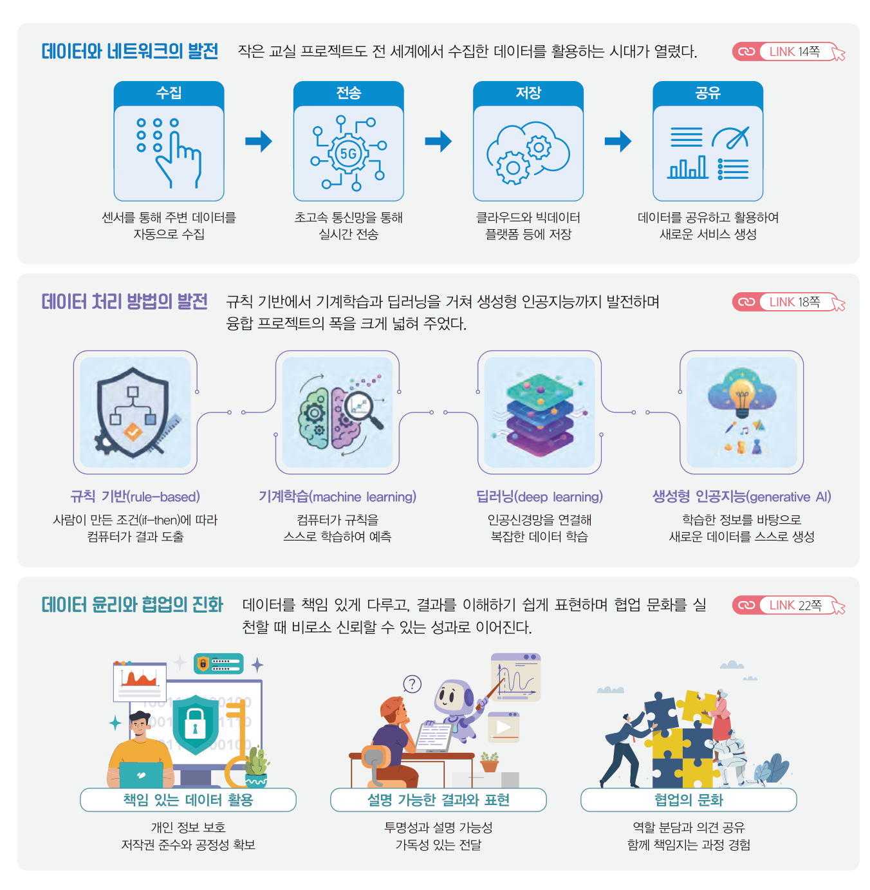
   <figcaption><b>교과서 13쪽</b> 데이터에서 사회적 실천까지, 기술 흐름을 따라가는 융합 프로젝트</figcaption></figure>
   <div class="tw"><table style="min-width:600px">
    <thead><tr><th style="width:150px">갈래</th><th style="width:70px">교과서</th><th style="width:80px">시간</th><th>오늘 직접 해 보는 것</th></tr></thead>
    <tbody>
     <tr><td><b>데이터와 네트워크</b></td><td>14~17쪽</td><td>강의 ①</td><td><b>배달 앱 해부</b> · 네트워크 고르기 실전 퀴즈</td></tr>
     <tr><td><b>데이터 처리 방법</b></td><td>18~21쪽</td><td>강의 ②</td><td><b>Quick, Draw!</b> — 내 낙서를 AI가 맞히게 해 보기</td></tr>
     <tr><td><b>데이터 윤리와 협업</b></td><td>22~26쪽</td><td>강의 ③</td><td><b>모럴 머신</b> · <b>편향 시뮬레이터</b> 직접 조작</td></tr>
    </tbody></table></div>
   <div class="box tip"><b>오늘의 한 문장</b> · &ldquo;<b>데이터의 흐름과 기술의 진화, 그리고 윤리적 협업의 실천은 분리된 영역이 아니라 서로를 연결하는 융합의 과정이다.</b>&rdquo; (교과서 13쪽)</div>`,
  pages:[{p:13,t:"데이터에서 사회적 실천까지, 기술 흐름을 따라가는 융합 프로젝트"}]}],},

/* ============ 1. 강의 ① ============ */
{kind:"lecture",nav:"강의 ①",mins:30,title:"데이터와 네트워크의 발전",
 sub:"5차시 — 치킨 한 마리가 도착하기까지 데이터가 지나는 길. 교과서 14~17쪽.",
 sections:[
 {n:"00",h:"들어가기 — 배달 앱은 어떻게 &lsquo;15분 뒤 도착&rsquo;을 아는가",
  html:`<div class="hook"><div class="hk">Story</div>
   <div class="hq">앱은 라이더를 본 적이 없다.<br>그런데 어떻게 몇 분 뒤 도착할지 알까?</div>
   <p>주문 버튼을 누른 뒤 화면에 뜨는 <b>&ldquo;15분 뒤 도착&rdquo;</b>. 이 한 줄이 나오기까지 데이터는 다섯 번 손을 바꿉니다.
   오늘 배울 <b>수집 → 전송 → 저장 → 공유</b>가 정확히 이 다섯 번입니다.</p></div>
   <div class="tw"><table style="min-width:640px">
    <thead><tr><th style="width:70px">단계</th><th style="width:180px">벌어지는 일</th><th>쓰이는 기술</th></tr></thead>
    <tbody>
     <tr><td><b>① 수집</b></td><td>라이더 휴대폰의 GPS가 1초에 한 번 위치를 찍는다</td><td>센서 · 사물 인터넷(IoT)</td></tr>
     <tr><td><b>② 전송</b></td><td>오토바이가 달리는 중에도 끊기면 안 된다</td><td>이동 통신망(4G · 5G)</td></tr>
     <tr><td><b>③ 저장</b></td><td>전국 라이더 수만 명의 위치가 실시간으로 쌓인다</td><td>클라우드 서버 · 데이터베이스</td></tr>
     <tr><td><b>④ 처리</b></td><td>과거 배달 기록으로 학습한 모델이 도착 시각을 예측한다</td><td>기계학습 <span style="color:var(--dim)">(강의 ②에서)</span></td></tr>
     <tr><td><b>⑤ 표현</b></td><td>지도 위 점과 &ldquo;15분&rdquo;이라는 숫자로 보여 준다</td><td>시각화 · API <span style="color:var(--dim)">(강의 ③에서)</span></td></tr>
    </tbody></table></div>
   <div class="ask"><div class="ah">발문</div>
   ①~⑤ 중 <b>하나만 고장 나도</b> 서비스는 무너집니다. 어느 단계가 고장 났을 때 사용자가 <b>가장 먼저 알아챌까요?</b></div>`},
 {n:"01",h:"① 데이터 수집 — 세상을 숫자로 바꾸는 일",
  lead:"현실 세계의 물리적 정보(온도, 습도, 영상 등)는 <b>센서</b>를 통해 디지털 데이터로 변환됩니다.",
  html:`<p>이 데이터는 <b class="term">사물 인터넷(IoT)</b> 기기를 통해 자동으로 수집되고, 다시 다른 장치나 서버로 전송됩니다.
   수집된 데이터는 <b>CSV</b>나 <b>JSON</b> 같은 <b class="term">표준 형식</b>으로 정리되어야 여러 시스템에서 활용될 수 있습니다.</p>
   <div class="grid g3">
    <div class="card"><h4>센서 (sensor)</h4><p>물리적 현상이나 환경의 변화를 <b>전기 신호로 바꾸어</b> 측정하는 장치</p></div>
    <div class="card"><h4>사물 인터넷 (IoT)</h4><p>다양한 사물에 센서를 부착해 네트워크로 연결하고 데이터를 주고받게 하는 기술</p></div>
    <div class="card"><h4>CSV와 JSON</h4><p><b>CSV</b>는 쉼표로 구분한 표 형태, <b>JSON</b>은 키와 값의 쌍. 서로 다른 프로그램이 같은 데이터를 읽으려면 이런 약속이 필요합니다</p></div>
   </div>
   <div class="box" style="margin-top:14px"><b>신뢰할 수 있는 데이터의 세 조건</b> — 프로젝트 결과의 신뢰성은 여기서 갈립니다.
    <ul>
     <li><b>정확성</b> · 틀리지 않고 사실에 맞게 기록되는 것</li>
     <li><b>완전성</b> · 빠진 정보 없이 필요한 데이터가 모두 포함되는 것</li>
     <li><b>시의성</b> · 최신 상태의 데이터를 유지하는 것</li>
    </ul>
    <b>세 조건이 깨지면</b> — 온도계가 2도씩 높게 읽으면 정확성이, 주말 데이터만 빠져 있으면 완전성이, 3년 전 상권 자료를 쓰면 시의성이 무너집니다.</div>
   <div class="box tip"><b>교과서가 든 예 — 스마트 농업</b> · 토양 수분 센서가 밭의 상태를 측정해 농부의 스마트폰으로 보냅니다.
   여기에 기상청 날씨 데이터를 결합하면 <b>작물의 생육 상태를 예측하는 프로젝트</b>가 됩니다.
   <br><br>이 강좌 <b>7회차 스마트 화분</b>이 정확히 이 구조입니다. 오늘 배우는 것이 그때 여러분 손에 들어옵니다.</div>`,
  pages:[{p:14,t:"① 데이터 수집 · 그림 Ⅰ-1"}]},
 {n:"02",h:"② 데이터 전송 — 어느 길로 보낼 것인가",
  lead:"길은 하나가 아닙니다. 상황에 따라 <b>속도 · 이동성 · 전력 · 요금</b>이 다른 길을 골라야 합니다.",
  html:`<figure class="fig">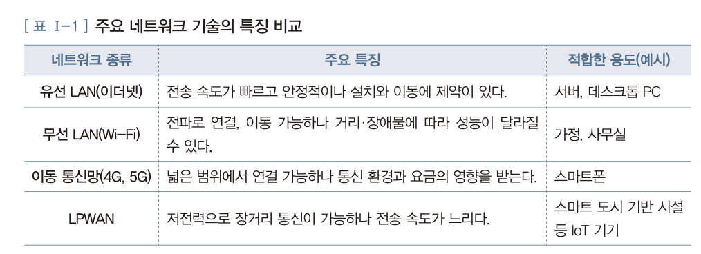
   <figcaption><b>교과서 15쪽 · 표 Ⅰ-1</b> 주요 네트워크 기술의 특징 비교</figcaption></figure>
   <div class="doit"><div class="dh">직접 골라 보기 <span class="m">4분 · 4문항</span></div>
    <p>실제 프로젝트 상황입니다. 여러분이 기술 담당자라면 어느 네트워크를 고르겠습니까? 눌러서 확인해 보세요.</p></div>
   <div class="netq" id="netq"></div>`,
  pages:[{p:15,t:"② 데이터 전송과 네트워크 · 표 Ⅰ-1 · 그림 Ⅰ-2"}]},
 {n:"03",h:"인터넷 · API · 클라우드가 만나는 지점",
  html:`<p><b class="term">인터넷</b>은 단순한 문서 교환을 넘어 <b>HTTP/HTTPS 프로토콜</b>을 기반으로 데이터를 <b>요청하고 응답하는</b> 구조로 발전했습니다.
   웹 서버와 클라이언트는 <b class="term">API</b>를 통해 데이터를 주고받으며, JSON 같은 표준 형식으로 쉽게 해석하고 재사용합니다.</p>
   <figure class="fig">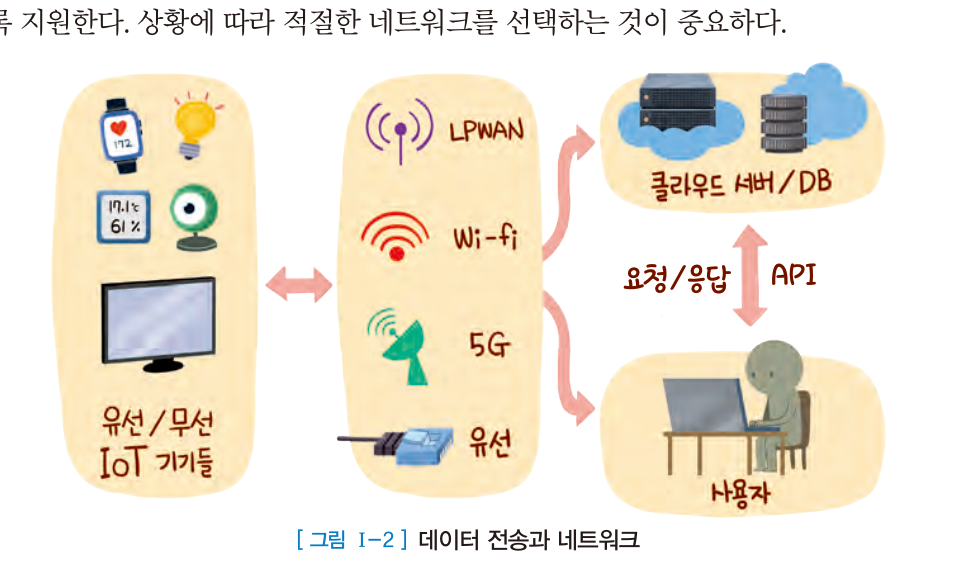
    <figcaption><b>교과서 15쪽 · 그림 Ⅰ-2</b> IoT 기기가 LPWAN · Wi-Fi · 5G · 유선으로 클라우드에 닿고, 사용자는 API로 요청하고 응답받습니다.</figcaption></figure>
   <div class="box tip"><b>API를 한 문장으로</b> · &ldquo;<b>메뉴판</b>&rdquo;입니다. 주방(서버)이 어떻게 요리하는지 몰라도, 메뉴판에 적힌 대로 주문하면 정해진 음식이 나옵니다.
   <b>5회차</b>에 교육청 급식 API로 직접 주문을 넣어 볼 겁니다.</div>`},
 {n:"04",h:"③ 데이터 저장 — 파일에서 지능형 관리까지",
  html:`<figure class="fig">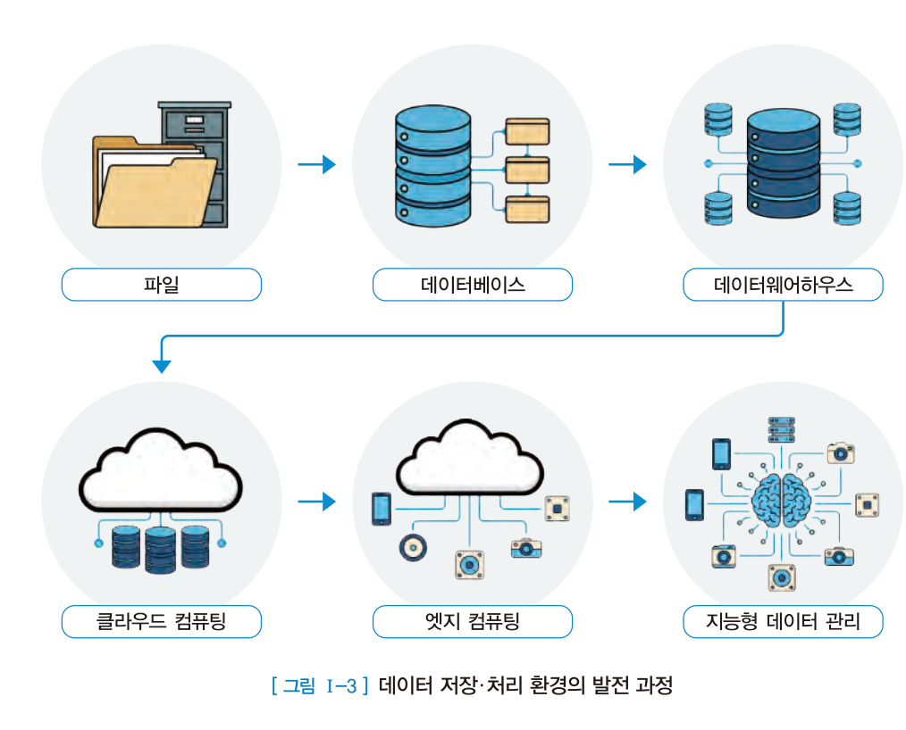
   <figcaption><b>교과서 16쪽 · 그림 Ⅰ-3</b> 파일 → 데이터베이스 → 데이터웨어하우스 → 클라우드 → 엣지 → 지능형 데이터 관리</figcaption></figure>
   <div class="tw"><table style="min-width:620px">
    <thead><tr><th style="width:150px">용어</th><th style="width:42%">무엇인가</th><th>한 줄 비유</th></tr></thead>
    <tbody>
     <tr><td><b>데이터베이스</b></td><td>많아진 데이터를 빠르게 찾기 위해 등장</td><td>번호표가 붙은 <b>서랍장</b></td></tr>
     <tr><td><b>데이터웨어하우스</b></td><td>여러 부서의 데이터를 모아 <b>분석 중심</b>으로 설계된 대형 저장소</td><td>여러 서랍장을 모은 <b>물류창고</b></td></tr>
     <tr><td><b>클라우드 컴퓨팅</b></td><td>서버를 직접 운영하지 않고 필요한 만큼 <b>빌려</b> 쓰는 방식</td><td>집을 사지 않고 <b>월세</b>로 사는 것</td></tr>
     <tr><td><b>분산 처리 시스템</b></td><td>큰 작업을 여러 컴퓨터가 나눠 처리 (하둡 · 스파크)</td><td>한 사람이 아니라 <b>여럿이 나눠 드는</b> 것</td></tr>
     <tr><td><b>엣지 컴퓨팅</b></td><td>중앙 서버로 보내기 전에 <b>발생 지점 근처</b>에서 먼저 처리</td><td>본사에 묻지 않고 <b>현장에서 즉시 판단</b></td></tr>
    </tbody></table></div>
   <div class="ask"><div class="ah">발문 · 목숨이 걸린 0.1초</div>
   자율주행차가 앞의 보행자를 인식했습니다. 이 판단을 <b>클라우드에 보내 답을 받아 온다면</b> 무슨 일이 벌어질까요?
   시속 60km면 0.3초 동안 차는 <b>5m</b>를 갑니다. 엣지 컴퓨팅이 왜 필요한지 이 숫자로 설명해 보세요.</div>`,
  pages:[{p:16,t:"③ 데이터 저장과 클라우드 · 그림 Ⅰ-3"}]},
 {n:"05",h:"④ 데이터 표준과 공유 — 함께 쓸 때 가치가 된다",
  lead:"표준은 서로 다른 시스템이 같은 데이터를 <b>같은 의미로 해석</b>하도록 돕습니다.",
  html:`<figure class="fig">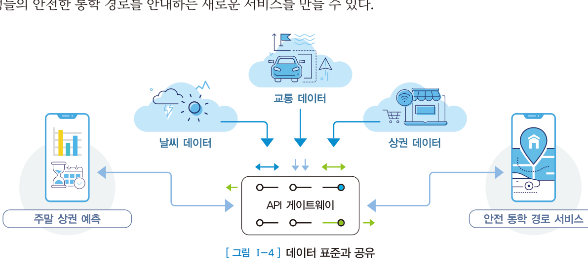
   <figcaption><b>교과서 17쪽 · 그림 Ⅰ-4</b> 날씨 · 교통 · 상권 데이터가 API 게이트웨이를 거쳐 주말 상권 예측, 안전 통학 경로 서비스로 이어집니다.</figcaption></figure>
   <div class="doit"><div class="dh">지금 열어 보기 <span class="m">3분</span></div>
    <p>공공데이터포털에 들어가 <b>내가 사는 지역 이름</b>을 검색해 보세요. 어떤 데이터가 이미 공개되어 있나요?
    <b>가장 뜻밖이었던 데이터 하나</b>를 채팅창에 올려 주세요. 오늘 과제와 다음 회차 프로젝트의 재료가 여기 있습니다.</p></div>
   <div class="reslist">
    <a class="res" href="https://www.data.go.kr" target="_blank" rel="noreferrer">
     <div class="rk">데이터 출처 · 행정안전부</div><div class="rt">공공데이터포털</div>
     <div class="rd">전국 공공기관 데이터의 관문. 교과서 17쪽에 소개된 바로 그 사이트입니다.</div><div class="ru">www.data.go.kr</div></a>
    <a class="res" href="https://kosis.kr" target="_blank" rel="noreferrer">
     <div class="rk">데이터 출처 · 통계청</div><div class="rt">국가통계포털 KOSIS</div>
     <div class="rd">인구 · 산업 · 환경 통계. 시계열 자료가 잘 정리되어 있습니다.</div><div class="ru">kosis.kr</div></a>
    <a class="res" href="https://sgis.kostat.go.kr" target="_blank" rel="noreferrer">
     <div class="rk">데이터 출처 · 지도로 보기</div><div class="rt">SGIS 통계지리정보서비스</div>
     <div class="rd">통계를 지도 위에 올려 볼 수 있습니다. &lsquo;우리 동네&rsquo; 주제에 특히 좋습니다.</div><div class="ru">sgis.kostat.go.kr</div></a>
    <a class="res" href="https://open.neis.go.kr" target="_blank" rel="noreferrer">
     <div class="rk">데이터 출처 · 교육부</div><div class="rt">교육정보 개방 포털 NEIS</div>
     <div class="rd">급식 · 학사일정 API. 5회차에 인증키를 발급받아 씁니다.</div><div class="ru">open.neis.go.kr</div></a>
   </div>`,
  pages:[{p:17,t:"④ 데이터 표준과 공유 · 그림 Ⅰ-4 · 스스로 해결하기"}]},
 {n:"06",h:"스스로 해결하기",
  lead:"교과서 17쪽 활동입니다. 방금 본 기술 중 하나를 골라 생활 속 문제에 붙여 보세요.",
  html:`<figure class="fig">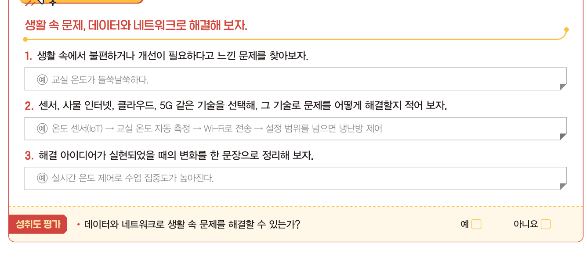
   <figcaption><b>교과서 17쪽</b> 스스로 해결하기 — 예시 답안이 회색으로 함께 제시되어 있습니다.</figcaption></figure>`}],
 quiz:[
 {q:"데이터가 가치를 만들어 내는 과정의 순서로 옳은 것은?",
  opts:["저장 → 수집 → 전송 → 공유","수집 → 전송 → 저장 → 공유","공유 → 수집 → 저장 → 전송","전송 → 수집 → 공유 → 저장"],
  a:1,why:"교과서 14쪽. <b>수집 → 전송 → 저장 → 공유</b>. 배달 앱 사례의 ①②③이 그대로 이 순서였습니다."},
 {q:"신뢰할 수 있는 데이터의 조건 중 <b>완전성</b>에 해당하는 설명은?",
  opts:["틀리지 않고 사실에 맞게 기록되는 것","빠진 정보 없이 필요한 데이터가 모두 포함되는 것","최신 상태의 데이터를 유지하는 것","여러 사람이 함께 사용할 수 있는 것"],
  a:1,why:"①은 정확성, ③은 시의성입니다. 주말 데이터만 빠져 있다면 완전성이 무너진 경우입니다. 교과서 14쪽."},
 {q:"넓은 논밭에 흩어진 IoT 센서처럼 <b>전력은 적게 쓰면서 멀리</b> 보내야 하는 경우 가장 적합한 네트워크는?",
  opts:["유선 LAN(이더넷)","무선 LAN(Wi-Fi)","이동 통신망(4G, 5G)","LPWAN"],
  a:3,why:"LPWAN은 전송 속도는 느리지만 저전력으로 장거리 통신이 가능해 환경 센서와 스마트 도시 기반 시설에 적합합니다. 교과서 15쪽 표 Ⅰ-1."},
 {q:"자율주행 자동차가 센서 데이터를 <b>차량 안에서</b> 실시간 처리하는 것과 가장 관련이 깊은 기술은?",
  opts:["데이터웨어하우스","엣지 컴퓨팅","분산 처리 시스템","데이터베이스"],
  a:1,why:"<b>엣지 컴퓨팅</b>입니다. 클라우드를 왕복하는 0.3초 동안 차는 5m를 더 갑니다. 교과서 16쪽."}]},

/* ============ 2. 강의 ② ============ */
{kind:"lecture",nav:"강의 ②",mins:30,title:"데이터 처리 방법의 발전",
 sub:"6차시 — 내 낙서를 알아보는 AI를 직접 이겨 보면서 배웁니다. 교과서 18~21쪽.",
 sections:[
 {n:"00",h:"먼저 해 보기 — AI에게 낙서로 도전하기",
  html:`<div class="hook"><div class="hk">Experience</div>
   <div class="hq">&ldquo;고양이&rdquo;를 규칙으로 설명해 보세요.<br>단, 그림을 보지 않고.</div>
   <p>&ldquo;귀가 뾰족하고 수염이 있고…&rdquo; 이렇게 규칙을 쓰기 시작하면 금방 막힙니다. 옆모습은? 웅크린 자세는? 새끼 고양이는?
   <b>사람은 규칙으로 설명하지 못하는 것도 알아봅니다.</b> 그런데 기계는 어떻게 알아볼까요?</p></div>
   <div class="doit"><div class="dh">Quick, Draw! 체험 <span class="m">5분 · 6개 그리기</span></div>
    <p>구글이 만든 실험입니다. 제시어를 <b>20초 안에</b> 그리면 신경망이 무엇인지 맞힙니다. 6개를 끝낸 뒤 아래 질문에 답해 보세요.</p>
    <ol>
     <li>AI가 <b>가장 빨리</b> 맞힌 그림은 무엇이었나요?</li>
     <li>AI가 <b>끝내 못 맞힌</b> 그림이 있었나요? 왜 그랬을까요?</li>
     <li>그림을 다 그리기 <b>전에</b> 맞히기도 했습니다. 무엇을 보고 판단한 걸까요?</li>
    </ol></div>
   <div class="reslist">
    <a class="res exp" href="https://quickdraw.withgoogle.com/" target="_blank" rel="noreferrer">
     <div class="rk">체험 · Google Creative Lab</div><div class="rt">Quick, Draw!</div>
     <div class="rd">내가 그리는 동안 신경망이 실시간으로 추측합니다. 전 세계 1,500만 명이 그린 5,000만 개의 낙서로 학습했습니다.</div>
     <div class="ru">quickdraw.withgoogle.com</div></a>
    <a class="res exp" href="https://quickdraw.withgoogle.com/data" target="_blank" rel="noreferrer">
     <div class="rk">데이터 보기</div><div class="rt">Quick, Draw! 데이터셋</div>
     <div class="rd">345개 항목의 낙서를 나라별로 볼 수 있습니다. <b>같은 단어를 나라마다 다르게 그린다</b>는 것이 보입니다 — 오늘 강의 ③의 편향 이야기와 이어집니다.</div>
     <div class="ru">quickdraw.withgoogle.com/data</div></a>
   </div>`},
 {n:"01",h:"① 규칙 기반 처리 — 사람이 규칙을 만들던 시절",
  lead:"초기의 정보 처리 방식은 <b>사람이 미리 정한 규칙을 컴퓨터가 그대로 실행</b>하는 방식이었습니다.",
  html:`<p>자동판매기는 &lsquo;돈이 투입되면 상품을 내보내라&rsquo;와 같은 <b>조건-결과 규칙</b>으로 작동했고,
   초기의 전문가 시스템은 증상 목록과 진단 규칙을 탐색해 진단 결과를 제시했습니다.</p>
   <figure class="fig">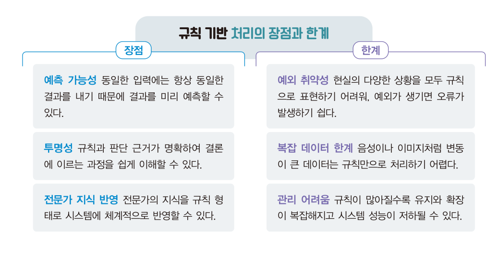
    <figcaption><b>교과서 18쪽</b> 규칙 기반 처리의 장점과 한계</figcaption></figure>
   <div class="box tip"><b>방금 체험과 연결하기</b> · 여러분이 &ldquo;고양이&rdquo;를 규칙으로 쓰려다 막혔던 그 지점이 바로 표의 <b>&lsquo;예외 취약성&rsquo;</b>과 <b>&lsquo;복잡 데이터 한계&rsquo;</b>입니다.
   특히 음성 인식이나 이미지 인식처럼 <b>변이가 큰 데이터</b>를 규칙으로 모두 서술하는 것은 사실상 불가능합니다.
   이 막다른 길에서 <b>&ldquo;그럼 규칙을 데이터에서 뽑아내면 되지 않을까?&rdquo;</b>라는 생각이 나왔습니다.</div>`,
  pages:[{p:18,t:"① 규칙 기반 처리"}]},
 {n:"02",h:"② 기계학습 — 데이터가 규칙을 만든다",
  html:`<figure class="fig">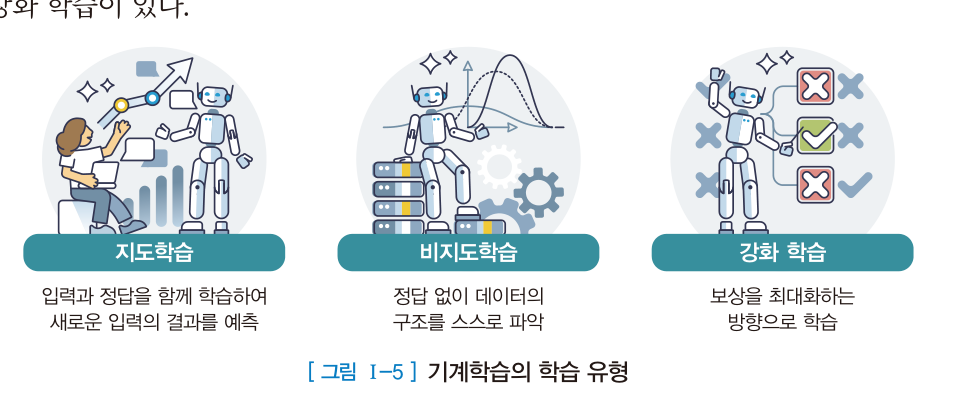
   <figcaption><b>교과서 19쪽 · 그림 Ⅰ-5</b> 기계학습의 학습 유형 — 지도학습 · 비지도학습 · 강화 학습</figcaption></figure>
   <div class="grid g3">
    <div class="card"><h4>지도학습</h4><p>입력과 <b>정답</b>을 함께 학습해 새 입력의 결과를 예측<br><span style="color:var(--dim)">Quick, Draw!가 이 방식 · 6~9회차에서 사용</span></p></div>
    <div class="card"><h4>비지도학습</h4><p>정답 없이 데이터의 <b>구조</b>를 스스로 파악<br><span style="color:var(--dim)">6회차 군집화(K-Means)</span></p></div>
    <div class="card"><h4>강화 학습</h4><p><b>보상</b>을 최대화하는 방향으로 시행착오하며 학습<br><span style="color:var(--dim)">알파고 · 게임 AI</span></p></div>
   </div>
   <figure class="fig" style="margin-top:16px">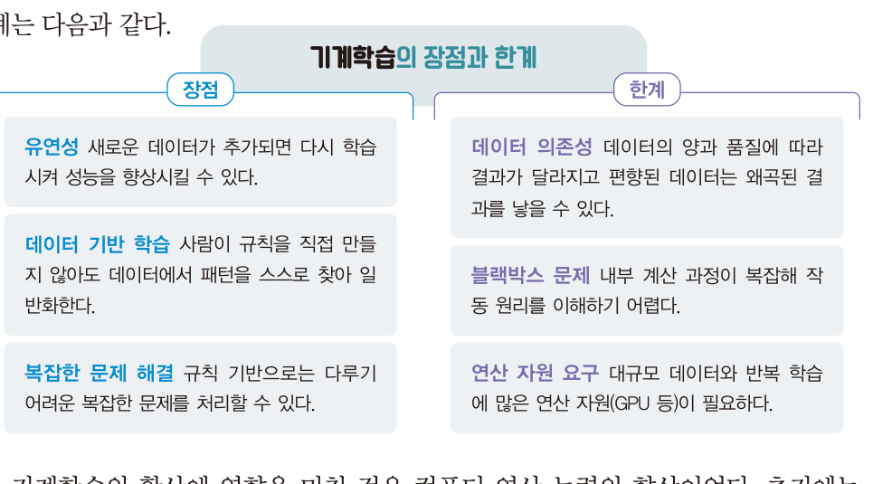
    <figcaption><b>교과서 19쪽</b> 기계학습의 장점과 한계 — <b>블랙박스 문제</b>는 강의 ③의 XAI로 이어집니다.</figcaption></figure>
   <div class="box"><b>CPU와 GPU는 어떤 차이가 있나요?</b> (교과서 19쪽 Q&amp;A)<br>
    CPU는 한 번에 하나씩 <b>순차적으로</b> 처리하고, GPU는 수천 개의 연산을 <b>동시에 병렬로</b> 처리합니다.
    <br><br><span style="color:var(--dim)">비유하면 CPU는 박사 한 명, GPU는 초등학생 천 명입니다. 어려운 문제 하나는 박사가, 쉬운 계산 천 개는 초등학생 천 명이 빠릅니다. 딥러닝은 후자입니다.</span></div>`,
  pages:[{p:19,t:"② 기계학습 · 그림 Ⅰ-5"}]},
 {n:"03",h:"③ 딥러닝 — 층을 쌓아 스스로 특징을 찾다",
  html:`<figure class="fig">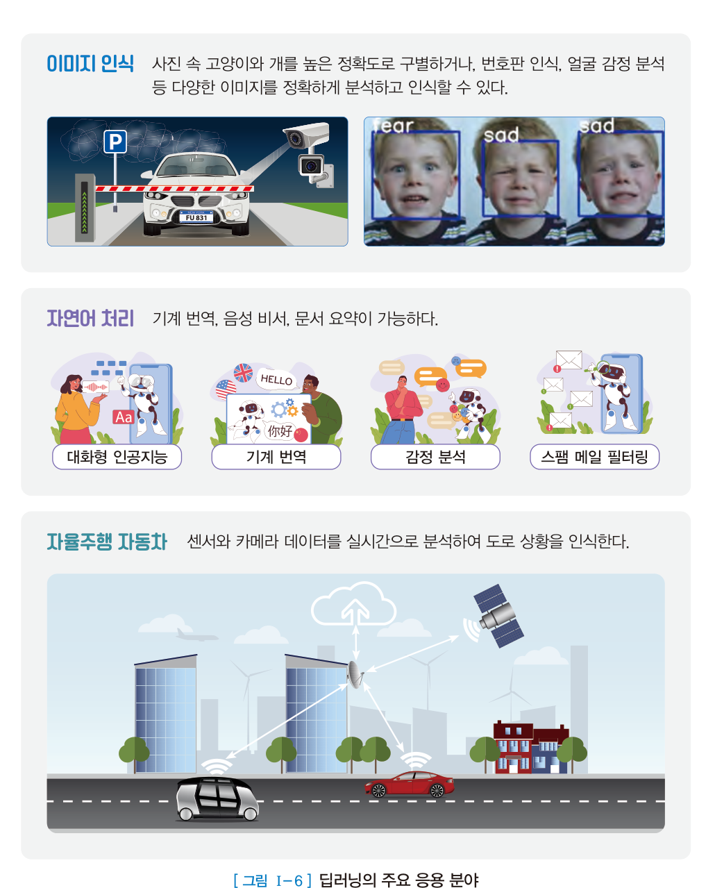
   <figcaption><b>교과서 20쪽 · 그림 Ⅰ-6</b> 딥러닝의 주요 응용 분야 — 이미지 인식 · 자연어 처리 · 자율주행 자동차</figcaption></figure>
   <div class="doit"><div class="dh">한 번 더 체험 <span class="m">5분 · 선택</span></div>
    <p>Code.org의 <b>AI for Oceans</b>는 물고기와 쓰레기를 직접 분류해 주며 AI를 학습시키는 활동입니다.
    내가 고른 예시가 <b>모델의 판단을 어떻게 바꾸는지</b> 눈으로 보입니다. 뒷부분에서는 &lsquo;편향&rsquo;까지 다룹니다 — 다음 강의의 예고편입니다.</p></div>
   <div class="reslist">
    <a class="res exp" href="https://code.org/oceans" target="_blank" rel="noreferrer">
     <div class="rk">체험 · Code.org</div><div class="rt">AI for Oceans</div>
     <div class="rd">내가 라벨을 붙이면 그대로 학습하는 AI. &ldquo;학습 데이터가 곧 모델&rdquo;임을 5분 만에 체감할 수 있습니다.</div>
     <div class="ru">code.org/oceans</div></a>
    <a class="res exp" href="https://teachablemachine.withgoogle.com/" target="_blank" rel="noreferrer">
     <div class="rk">체험 · Google</div><div class="rt">Teachable Machine</div>
     <div class="rd">코딩 없이 웹캠으로 내 분류 모델을 만듭니다. <b>6회차와 9회차에 정식으로 사용</b>하니 미리 둘러보세요.</div>
     <div class="ru">teachablemachine.withgoogle.com</div></a>
   </div>
   <div class="box warn"><b class="t">공짜가 아니다</b>딥러닝은 <b>데이터와 에너지 소모가 크다</b>는 점에서 환경적 부담이 크다고 지적됩니다. (교과서 20쪽)
   기술을 고를 때는 성능만이 아니라 <b>비용과 환경</b>도 함께 봐야 합니다.</div>
   <div class="ask"><div class="ah">발문</div>
   교실 온도로 &lsquo;창문을 열어야 하는가&rsquo;를 판단하는 문제에 <b>딥러닝</b>을 쓰는 것이 좋을까요, <b>규칙 기반</b>이 나을까요? 근거를 들어 말해 보세요.
   <span style="color:var(--dim)">(이것이 오늘 학습 목표 3번 — &lsquo;선택한 근거를 설명할 수 있다&rsquo;입니다.)</span></div>`,
  pages:[{p:20,t:"③ 딥러닝 · 그림 Ⅰ-6"}]},
 {n:"04",h:"④ 생성형 인공지능 — 만들어 내는 단계로",
  html:`<figure class="fig">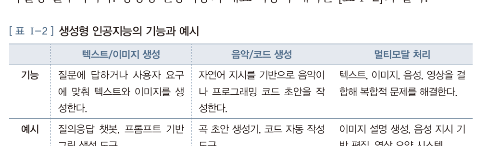
   <figcaption><b>교과서 21쪽 · 표 Ⅰ-2</b> 생성형 인공지능의 기능과 예시</figcaption></figure>
   <p>보통 <b>수십억 개의 매개 변수</b>를 학습하므로 고성능 GPU나 <b class="term">TPU</b>와 대규모 클라우드가 사실상 필수입니다.</p>
   <div class="box"><b>융합 프로젝트에서의 쓸모</b> · 아이디어를 빠르게 구체화하고 시제품을 단기간에 만들 수 있으며,
   프로그래밍 코드도 자연어 지시로 생성할 수 있어 <b>더 많은 사람이 문제 해결에 참여</b>할 수 있습니다.</div>
   <div class="box warn"><b class="t">동시에 제기되는 문제</b><b>허위 정보 생성, 저작권 침해, 편향된 결과.</b>
   그래서 이 강좌는 모든 과제에 <b>프롬프트 로그</b>(입력 · 결과 · 내가 고친 부분)를 함께 제출하도록 합니다.
   <b>AI를 쓰지 말라는 것이 아니라, 쓴 흔적을 남기고 검증하라는 것</b>입니다.</div>
   <figure class="fig">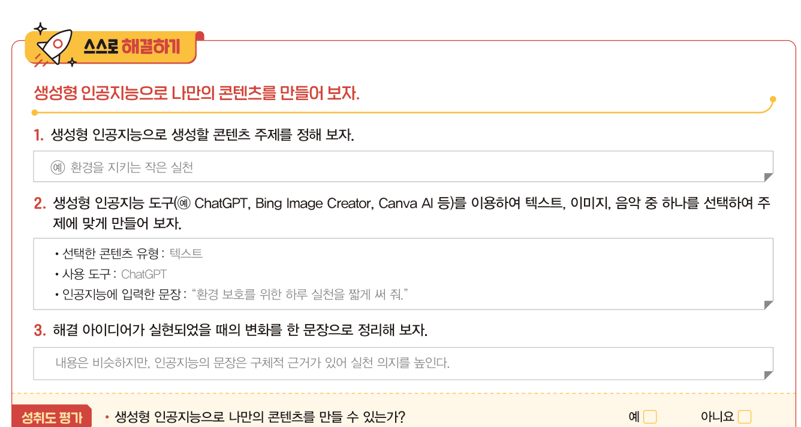
    <figcaption><b>교과서 21쪽</b> 스스로 해결하기 — 생성형 인공지능으로 나만의 콘텐츠를 만들어 보자</figcaption></figure>`,
  pages:[{p:21,t:"④ 생성형 인공지능 · 표 Ⅰ-2"}]},
 {n:"05",h:"70년을 한 화면에",
  lead:"오늘 배운 네 방식은 앞의 것을 <b>대체</b>한 것이 아니라 <b>도구함에 추가</b>된 것입니다.",
  html:`<div class="tline">
   <div class="tl2"><div class="dot"></div><div class="yr">1950s ~ 1980s</div><div class="tt2">규칙 기반 (rule-based)</div>
    <div class="dd">사람이 만든 조건(if-then)에 따라 컴퓨터가 결과를 도출. <b>지금도 쓰인다</b> — 자동판매기, 신호등, 온도 제어기.</div></div>
   <div class="tl2"><div class="dot"></div><div class="yr">1990s ~ 2010s</div><div class="tt2">기계학습 (machine learning)</div>
    <div class="dd">컴퓨터가 데이터에서 규칙을 스스로 학습해 예측. <b>지금도 주력</b> — 스팸 필터, 배달 도착 예측, 신용 평가.</div></div>
   <div class="tl2"><div class="dot"></div><div class="yr">2012 ~</div><div class="tt2">딥러닝 (deep learning)</div>
    <div class="dd">인공신경망을 여러 층으로 연결해 복잡한 데이터를 학습. GPU와 클라우드가 이것을 가능하게 했다. <b>이미지 · 음성 · 언어</b>에 강하다.</div></div>
   <div class="tl2"><div class="dot"></div><div class="yr">2022 ~</div><div class="tt2">생성형 인공지능 (generative AI)</div>
    <div class="dd">학습한 정보를 바탕으로 <b>새로운 데이터를 스스로 생성</b>. 텍스트 · 이미지 · 음악 · 코드. 지금 여러분이 매일 쓰는 그것.</div></div>
  </div>
  <div class="tw"><table style="min-width:640px">
   <thead><tr><th style="width:110px">처리 방식</th><th style="width:150px">규칙은 누가 만드나</th><th>강한 곳</th><th>약한 곳</th></tr></thead>
   <tbody>
    <tr><td><b>규칙 기반</b></td><td>사람이 직접</td><td>예측 가능 · 투명 · 전문가 지식 반영</td><td>예외 취약 · 복잡 데이터 한계 · 관리 어려움</td></tr>
    <tr><td><b>기계학습</b></td><td>데이터에서 스스로</td><td>유연 · 복잡한 문제 해결</td><td>데이터 의존성 · 블랙박스 · 연산 자원</td></tr>
    <tr><td><b>딥러닝</b></td><td>다층 신경망이 스스로</td><td>이미지 · 음성 · 언어 등 비정형 데이터</td><td>대규모 데이터와 에너지 · 환경 부담</td></tr>
    <tr><td><b>생성형 AI</b></td><td>학습한 것을 바탕으로 새로 생성</td><td>텍스트 · 이미지 · 음악 · 코드 창작</td><td>허위 정보 · 저작권 · 편향</td></tr>
   </tbody></table></div>
   <div class="box tip"><b>기억할 것</b> · 뒤에 나온 기술이 <b>항상 더 좋은 것은 아닙니다.</b> 문제에 맞는 것이 좋은 것입니다.</div>`},
 {n:"06",h:"더 볼 자료",
  html:`<div class="reslist">
   <a class="res vid" href="https://docuprime.ebs.co.kr/docuprime/vodReplayView?courseId=10027453&lectId=10794476" target="_blank" rel="noreferrer">
    <div class="rk">영상 · EBS 다큐프라임</div><div class="rt">인공지능 1부 — 지능 만들기</div>
    <div class="rd">인공지능의 과거와 현재를 실험으로 보여 줍니다. 오늘 배운 &lsquo;규칙에서 학습으로&rsquo;의 전환이 영상으로 나옵니다.</div>
    <div class="ru">docuprime.ebs.co.kr</div></a>
   <a class="res vid" href="https://www.ebssw.kr/edc/cultursens/cultursensDetailView.do?alctcrSn=56282" target="_blank" rel="noreferrer">
    <div class="rk">영상 강좌 · EBS SW교육</div><div class="rt">인공지능 첫 걸음 — 데이터에서 딥러닝까지</div>
    <div class="rd">인공지능의 역사부터 탐색 · 지각 · 추론, 머신러닝에서 딥러닝까지 기본 개념을 차례로 다룹니다.</div>
    <div class="ru">www.ebssw.kr</div></a>
   <a class="res vid" href="https://www.youtube.com/results?search_query=%EA%B8%B0%EA%B3%84%ED%95%99%EC%8A%B5+%EB%94%A5%EB%9F%AC%EB%8B%9D+%EC%B0%A8%EC%9D%B4+%EC%89%BD%EA%B2%8C+%EC%84%A4%EB%AA%85" target="_blank" rel="noreferrer">
    <div class="rk">영상 찾기 · 유튜브 검색</div><div class="rt">기계학습과 딥러닝의 차이</div>
    <div class="rd">여러 설명 영상을 비교해 보세요. <b>어느 영상이 가장 잘 설명했는지</b> 고르는 것 자체가 좋은 학습입니다.</div>
    <div class="ru">youtube.com 검색</div></a>
   <a class="res vid" href="https://www.youtube.com/results?search_query=%EC%83%9D%EC%84%B1%ED%98%95+AI+%EC%9B%90%EB%A6%AC+%EA%B3%A0%EB%93%B1%ED%95%99%EC%83%9D" target="_blank" rel="noreferrer">
    <div class="rk">영상 찾기 · 유튜브 검색</div><div class="rt">생성형 AI는 어떻게 만들어 내는가</div>
    <div class="rd">고등학생 눈높이의 설명 영상을 찾아보세요.</div>
    <div class="ru">youtube.com 검색</div></a>
  </div>
  <div class="box"><b>교사 안내</b> · 위 링크는 검색으로 확인한 자료입니다. 수업 전 <b>내용을 미리 확인</b>하고 필요한 구간만 잘라 쓰는 것을 권합니다.</div>`}],
 quiz:[
 {q:"규칙 기반 처리의 <b>한계</b>로 옳지 <b>않은</b> 것은?",
  opts:["현실의 다양한 상황을 모두 규칙으로 표현하기 어렵다","음성이나 이미지처럼 변동이 큰 데이터는 처리하기 어렵다","규칙이 많아질수록 유지와 확장이 복잡해진다","동일한 입력에도 결과가 달라져 예측할 수 없다"],
  a:3,why:"④는 규칙 기반의 <b>장점</b>인 예측 가능성을 뒤집은 서술입니다. 규칙 기반은 동일한 입력에 항상 동일한 결과를 냅니다. 교과서 18쪽."},
 {q:"Quick, Draw!처럼 <b>정답이 붙은</b> 낙서 수천만 개로 학습한 방식은?",
  opts:["지도학습","비지도학습","강화 학습","규칙 기반 처리"],
  a:0,why:"입력(낙서)과 정답(무엇을 그린 것인지)을 함께 학습했으므로 <b>지도학습</b>입니다. 교과서 19쪽 그림 Ⅰ-5."},
 {q:"기계학습의 <b>블랙박스 문제</b>란?",
  opts:["데이터 저장 공간이 부족한 문제","내부 계산 과정이 복잡해 작동 원리를 이해하기 어려운 문제","학습 속도가 너무 느린 문제","정답 데이터를 구할 수 없는 문제"],
  a:1,why:"모델의 내부 계산 과정이 복잡해 사람이 작동 원리를 직관적으로 이해하기 어려운 것입니다. 이 한계를 줄이려는 연구가 <b>XAI</b>입니다. 교과서 19쪽 · 24쪽."},
 {q:"딥러닝에 대한 설명으로 옳지 <b>않은</b> 것은?",
  opts:["인간의 뇌 신경망 구조를 모방한 다층 신경망을 활용한다","이미지 인식, 자연어 처리, 자율주행에 활용된다","GPU 성능 향상과 클라우드 발전에 힘입어 성장했다","데이터와 에너지 소모가 적어 환경 부담이 작다"],
  a:3,why:"딥러닝은 <b>데이터와 에너지 소모가 크다</b>는 점이 환경적 부담으로 지적됩니다. 교과서 20쪽."}]},

/* ============ 3. 강의 ③ ============ */
{kind:"lecture",nav:"강의 ③",mins:30,title:"데이터 윤리와 협업의 진화",
 sub:"7차시 — 기술이 아니라 사람이 결정해야 하는 것들. 교과서 22~26쪽.",
 sections:[
 {n:"00",h:"먼저 결정해 보기 — 당신이라면 어떻게 하겠는가",
  html:`<div class="hook"><div class="hk">Experience</div>
   <div class="hq">자율주행차의 브레이크가 고장 났다.<br>직진하면 A가, 핸들을 꺾으면 B가 다친다.</div>
   <p>이 결정을 <b>사람이 미리 코드로 적어 두어야</b> 합니다. 사고가 난 뒤에 정할 수는 없으니까요.
   MIT가 만든 <b>모럴 머신</b>은 전 세계 233개국 <b>수백만 명</b>에게 이 질문을 던졌고, <b>4,000만 건</b>의 답을 모았습니다.
   그리고 놀랍게도 — <b>나라마다 답이 달랐습니다.</b></p></div>
   <div class="doit"><div class="dh">모럴 머신 체험 <span class="m">6분 · 13개 상황</span></div>
    <p>13개 상황을 판단하면 <b>내 판단의 경향</b>이 그래프로 나옵니다. 다 끝낸 뒤 아래를 확인하세요.</p>
    <ol>
     <li>내가 가장 중요하게 여긴 것은 무엇으로 나왔나요? (사람 수 / 나이 / 법규 준수 / 종 등)</li>
     <li>전체 평균과 <b>가장 크게 다른</b> 항목은 무엇이었나요?</li>
     <li>이 결과를 그대로 <b>자율주행차에 넣어도</b> 될까요?</li>
    </ol></div>
   <div class="reslist">
    <a class="res exp" href="https://www.moralmachine.net/hl/kr" target="_blank" rel="noreferrer">
     <div class="rk">체험 · MIT Media Lab · 한국어</div><div class="rt">모럴 머신 (Moral Machine)</div>
     <div class="rd">자율주행차의 도덕적 판단을 묻는 실험. 한국어를 지원하며, 끝나면 내 판단 경향을 통계로 보여 줍니다.</div>
     <div class="ru">moralmachine.net/hl/kr</div></a>
    <a class="res vid" href="https://www.technologyreview.kr/a-global-ethics-study-aims-to-help-ai-solve-the-self-driving-trolley-problem/" target="_blank" rel="noreferrer">
     <div class="rk">읽을거리 · MIT 테크놀로지 리뷰</div><div class="rt">자율주행차는 아기와 할머니 중 누구를 살려야 할까?</div>
     <div class="rd">모럴 머신 연구의 배경과 결과를 정리한 기사입니다.</div>
     <div class="ru">technologyreview.kr</div></a>
   </div>
   <div class="box tip"><b>연구가 밝힌 것</b> · 사람들은 대체로 <b>사람을 동물보다, 다수를 소수보다</b> 우선했습니다.
   그런데 개인주의 성향이 강한 나라는 <b>젊은 사람</b>을 더 살렸고, <b>한국 · 일본 · 중국 · 대만</b>처럼 집단주의 성향이 강한 나라는 <b>연장자</b>를 상대적으로 더 존중했습니다.
   <br><br><b>같은 알고리즘을 전 세계에 똑같이 넣을 수 있을까요?</b> 이것이 오늘 마지막 토의 논제입니다.</div>`},
 {n:"01",h:"① 책임 있는 데이터 활용",
  lead:"데이터를 다룰 때는 윤리와 법적 책임을 고려해야 합니다. 교과서 22쪽.",
  html:`<figure class="fig">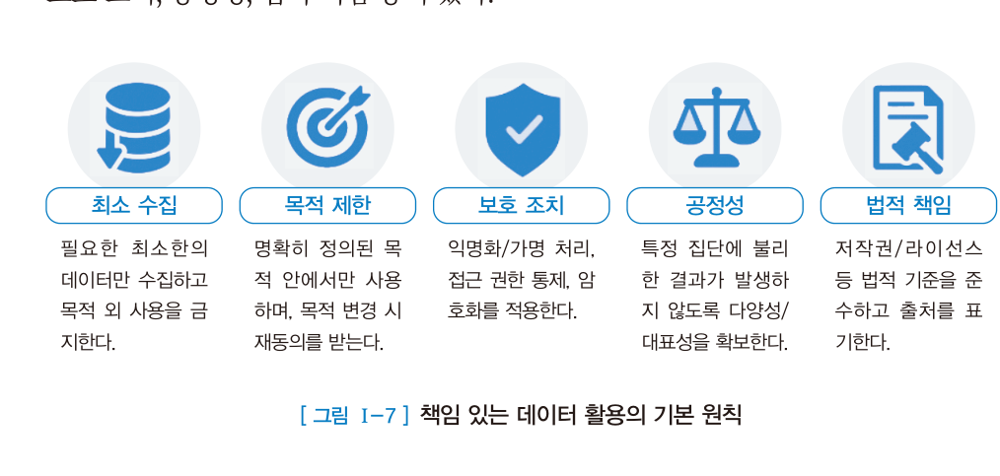
   <figcaption><b>교과서 22쪽 · 그림 Ⅰ-7</b> 책임 있는 데이터 활용의 기본 원칙 — 최소 수집 · 목적 제한 · 보호 조치 · 공정성 · 법적 책임</figcaption></figure>
   <ul>
    <li><b>개인 정보</b> — 사전 고지와 동의를 전제로 하고, 목적 외 이용을 금지하며 최소 범위로 수집합니다.</li>
    <li><b>저작권</b> — 출처를 명확히 표기하고 라이선스 조건을 확인합니다.</li>
    <li><b>편향</b> — 특정 집단의 데이터가 충분히 포함되지 않으면 결과가 왜곡되어 <b>사회적 차별을 심화시킬 위험</b>이 있습니다.</li>
    <li><b>보호 조치</b> — <b>익명화나 가명 처리</b>로 재식별 위험을 최소화합니다.</li>
   </ul>`,
  pages:[{p:22,t:"① 책임 있는 데이터 활용 · 그림 Ⅰ-7"}]},
 {n:"02",h:"편향은 어떻게 만들어지는가 — 직접 조작해 보기",
  lead:"&ldquo;정확도 95%&rdquo;라는 모델이 어떻게 누군가에게는 쓸모없을 수 있는지, 슬라이더 하나로 확인해 봅니다.",
  html:`<div class="box"><b>상황</b> · 학교 출입문에 얼굴 인식 시스템을 만듭니다. 학습에 쓸 수 있는 사진은 <b>총 100장</b>.
   우리 학교에는 <b>A 유형과 B 유형 학생이 반반</b> 있습니다. 100장을 어떻게 나눠 담을지는 <b>여러분이 정합니다.</b></div>
   <div class="bias">
    <div class="ctl">
     <div class="lab">A 유형 사진 <b id="bA">50</b>장 / B 유형 <b id="bB">50</b>장</div>
     <input type="range" id="bRange" min="0" max="100" step="5" value="50">
    </div>
    <div class="bars">
     <div class="bar"><div class="nm">A 유형 정확도</div><div class="tr"><div class="fl" id="flA" style="background:linear-gradient(90deg,#7fa8d4,#a9c6e4)"></div></div><div class="vv" id="vA">—</div></div>
     <div class="bar"><div class="nm">B 유형 정확도</div><div class="tr"><div class="fl" id="flB" style="background:linear-gradient(90deg,#d98a7a,#e8b0a3)"></div></div><div class="vv" id="vB">—</div></div>
     <div class="bar"><div class="nm"><b style="color:var(--accent)">전체 정확도</b></div><div class="tr"><div class="fl" id="flT" style="background:linear-gradient(90deg,#d8b45a,#e7c37a)"></div></div><div class="vv" id="vT">—</div></div>
    </div>
    <div class="verdict2" id="bMsg">—</div>
   </div>
   <div class="ask"><div class="ah">발문</div>
   <ol>
    <li>슬라이더를 <b>50 : 50</b>에 놓았을 때와 <b>90 : 10</b>에 놓았을 때, 두 유형의 정확도 차이는 각각 몇 %p인가요?</li>
    <li>90 : 10일 때 학교에 <b>전체 정확도만</b> 보고했다면, 그 보고는 거짓말인가요? 무엇을 빠뜨린 것인가요?</li>
    <li>이 문제를 고치려면 <b>무엇</b>을 바꿔야 하나요? 알고리즘인가요, 데이터인가요?</li>
   </ol></div>
   <div class="box warn"><b class="t">이것이 &lsquo;공정성&rsquo; 원칙입니다</b>교과서 24쪽의 예 — &ldquo;<b>학습 데이터의 80%가 20대 남성으로 구성되어 특정 집단에 유리한 결과가 나타날 수 있다.</b>&rdquo;
   이런 근거를 함께 제시하는 것이 해석의 신뢰성을 높입니다.</div>`},
 {n:"03",h:"데이터 활용의 네 가지 위험과 대응",
  lead:"교과서 23쪽. 이 네 가지는 우리 강좌의 <b>제출물 감점 기준</b>과 그대로 연결됩니다.",
  html:`<figure class="fig">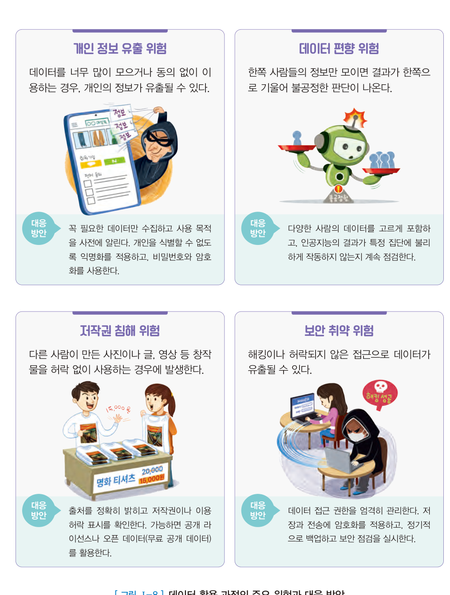
   <figcaption><b>교과서 23쪽 · 그림 Ⅰ-8</b> 데이터 활용 과정의 주요 위험과 대응 방안</figcaption></figure>
   <div class="box warn"><b class="t">이 강좌의 규칙으로 옮기면</b>
   <ul>
    <li><b>개인 정보 유출</b> → 설문 · 관찰 데이터에 실명을 쓰지 않습니다. 사진은 동의 없이 제출물에 넣지 않습니다.</li>
    <li><b>데이터 편향</b> → 우리 반 남학생만 조사한 결과를 &lsquo;고등학생 전체&rsquo;로 말하지 않습니다.</li>
    <li><b>저작권 침해</b> → 이미지 · 글 · 코드의 <b>출처를 반드시 표기</b>합니다.</li>
    <li><b>보안 취약</b> → API 인증키를 코드에 그대로 두고 GitHub에 올리지 않습니다.</li>
   </ul></div>`,
  pages:[{p:23,t:"그림 Ⅰ-8 주요 위험과 대응 방안"}]},
 {n:"04",h:"② 설명 가능한 결과와 표현 — &ldquo;왜?&rdquo;에 답할 수 있는가",
  html:`<div class="box"><b>생각해 보기</b> · 대학 입시에서 AI가 여러분을 <b>불합격</b>시켰습니다.
   이유를 물었더니 &ldquo;<b>모델이 그렇게 판단했습니다</b>&rdquo;라는 답만 돌아옵니다. 납득할 수 있나요?</div>
   <p>이래서 결과를 <b>설명 가능한 방식</b>으로 제시하는 것이 중요합니다. 이미지 분류에서 &ldquo;이 부분 때문에 고양이라고 판단했다&rdquo;를 시각적으로 보여 주거나,
   텍스트 분석에서 어떤 단어가 영향을 주었는지 색으로 표시하는 기술이 개발되고 있습니다. 이것이 <b class="term">설명 가능한 인공지능(XAI)</b>입니다.</p>
   <figure class="fig">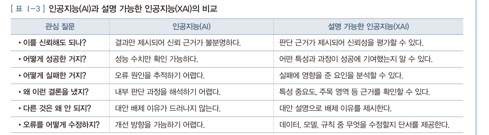
    <figcaption><b>교과서 24쪽 · 표 Ⅰ-3</b> 인공지능(AI)과 설명 가능한 인공지능(XAI)의 비교</figcaption></figure>
   <div class="ask"><div class="ah">발문</div>
   표의 여섯 질문 중 <b>12회차 성과공유회에서 심사위원이 실제로 던질 질문</b>은 무엇일까요?
   미리 답을 준비해 두면 그날 편합니다.</div>`,
  pages:[{p:24,t:"② 설명 가능한 결과와 표현 · 표 Ⅰ-3"}]},
 {n:"05",h:"③ 협업을 위한 도구와 문화",
  html:`<figure class="fig">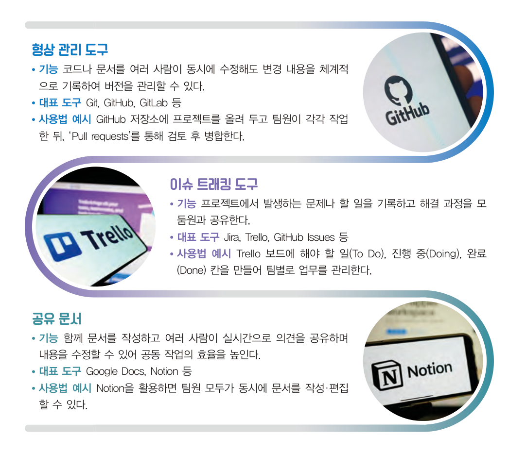
   <figcaption><b>교과서 25쪽</b> 형상 관리 도구 · 이슈 트래킹 도구 · 공유 문서</figcaption></figure>
   <div class="tw"><table style="min-width:600px">
    <thead><tr><th style="width:120px">도구</th><th style="width:150px">대표 도구</th><th>이 강좌에서 언제 쓰나</th></tr></thead>
    <tbody>
     <tr><td><b>형상 관리</b></td><td>Git, GitHub, GitLab</td><td><b>11회차</b> — 게임과 보고서를 GitHub에 올립니다</td></tr>
     <tr><td><b>이슈 트래킹</b></td><td>Jira, Trello, GitHub Issues</td><td><b>7~10회차</b> — 팀 할 일을 To Do / Doing / Done으로 관리합니다</td></tr>
     <tr><td><b>공유 문서</b></td><td>Google Docs, Notion</td><td><b>오늘부터</b> — 활동지를 구글 문서로 제출합니다</td></tr>
    </tbody></table></div>
   <div class="box tip"><b>교과서의 마지막 문장</b> · &ldquo;협업은 단순히 도구 사용에 그치지 않고, <b>서로의 기여를 존중하고 책임을 나누는 문화</b>가 뒷받침되어야 한다.&rdquo;</div>`,
  pages:[{p:25,t:"③ 협업을 위한 도구와 문화"}]},
 {n:"06",h:"읽을거리 — 데이터의 폭발, 인공지능의 도약",
  html:`<figure class="fig">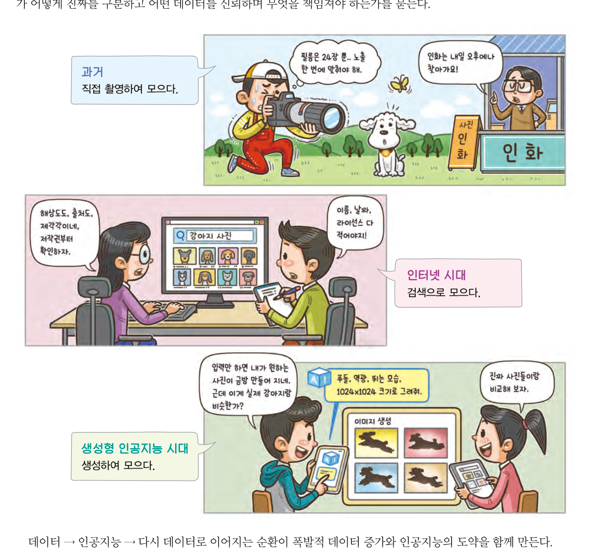
   <figcaption><b>교과서 26쪽</b> 과거 — 직접 촬영하여 모으다 / 인터넷 시대 — 검색으로 모으다 / 생성형 인공지능 시대 — 생성하여 모으다</figcaption></figure>
   <div class="ask"><div class="ah">발문 · 오늘의 마지막 질문</div>
   생성형 AI가 만든 강아지 사진으로 &lsquo;강아지 분류 모델&rsquo;을 학습시키면 어떤 일이 생길까요?
   그 모델은 <b>진짜 강아지</b>를 잘 알아볼까요? 방금 조작해 본 <b>편향 시뮬레이터</b>를 떠올려 보세요.</div>`,
  pages:[{p:26,t:"읽을거리 — 데이터의 폭발, 인공지능의 도약"}]}],
 quiz:[
 {q:"책임 있는 데이터 활용의 기본 원칙에 해당하지 <b>않는</b> 것은?",
  opts:["최소 수집","목적 제한","최대 공개","공정성"],
  a:2,why:"다섯 원칙은 <b>최소 수집 · 목적 제한 · 보호 조치 · 공정성 · 법적 책임</b>입니다. 교과서 22쪽 그림 Ⅰ-7."},
 {q:"학습 데이터의 90%가 A 유형이고 10%만 B 유형일 때 나타나는 가장 큰 문제는?",
  opts:["전체 정확도가 반드시 낮아진다","전체 정확도는 높아 보여도 B 유형에게는 잘 작동하지 않는다","학습 시간이 길어진다","저장 공간이 부족해진다"],
  a:1,why:"편향 시뮬레이터에서 확인한 그대로입니다. 전체 평균은 괜찮아 보여도 <b>소수 집단에게는 쓸 수 없는 모델</b>이 됩니다. 이래서 &lsquo;공정성&rsquo; 원칙이 필요합니다."},
 {q:"설명 가능한 인공지능(XAI)이 필요한 가장 큰 이유는?",
  opts:["학습 속도를 높이기 위해","저장 공간을 줄이기 위해","판단 근거와 과정을 사람이 이해할 수 있게 드러내 신뢰성과 공정성을 강화하기 위해","인터넷 없이 동작하게 하기 위해"],
  a:2,why:"딥러닝처럼 복잡한 모델은 <b>블랙박스</b>입니다. XAI는 판단 근거와 과정, 불확실성을 사람이 이해할 수 있는 형태로 드러냅니다. 교과서 24쪽."},
 {q:"코드나 문서를 여러 사람이 동시에 수정해도 변경 내용을 기록해 버전을 관리하는 도구는?",
  opts:["형상 관리 도구","이슈 트래킹 도구","공유 문서","시각화 도구"],
  a:0,why:"형상 관리 도구(Git, GitHub, GitLab)입니다. 11회차에 직접 씁니다. 교과서 25쪽."}]},

/* ============ 4. 과제 ============ */
{kind:"task",nav:"과제",mins:60,title:"내가 쓰는 서비스 해부하기",
 sub:"8차시 · 교과서 27쪽 역량 키우기 활동. 오늘 배운 모든 것을 서비스 하나에 적용합니다.",
 sections:[
 {n:"01",h:"활동 안내",
  lead:"생활 속에서 사용하는 앱이나 서비스를 하나 골라, 그 안에 숨어 있는 데이터의 <b>수집 – 전송 – 저장 – 처리 – 표현</b> 과정을 탐구합니다. 강의 ①의 <b>배달 앱 해부</b>를 여러분의 서비스로 다시 하는 것입니다.",
  html:`<figure class="fig">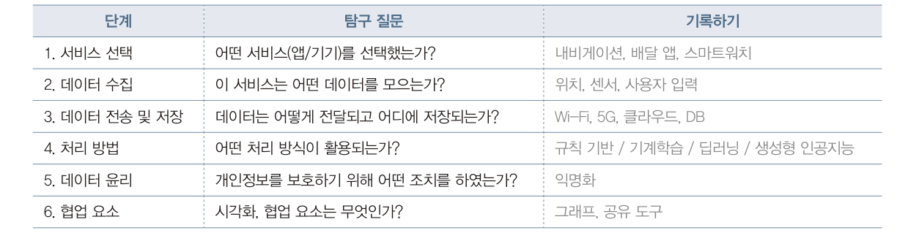
   <figcaption><b>교과서 27쪽</b> 활동 단계 — 여섯 단계의 탐구 질문과 기록 예시</figcaption></figure>
   <div class="box tip"><b>고르기 좋은 서비스</b> · 내비게이션 · 배달 앱 · 스마트워치 · 음악 추천 · 지도 앱 · 교통카드 · 무인 계산대 · 유튜브 추천 · 학교 급식 앱<br>
   <b>피해야 할 것</b> · 내가 한 번도 써 보지 않은 서비스, 어떤 데이터를 모으는지 짐작조차 안 되는 서비스</div>
   <div class="box"><b>탐정처럼 근거 찾는 법</b>
    <ul>
     <li>앱의 <b>개인정보처리방침</b>을 열면 &ldquo;수집하는 개인정보 항목&rdquo;이 그대로 적혀 있습니다. 2번 칸의 정답이 거기 있습니다.</li>
     <li>휴대폰 설정 → 앱 → <b>권한</b> 목록(위치 · 카메라 · 마이크 · 신체 활동)이 어떤 센서를 쓰는지 알려 줍니다.</li>
     <li>비행기 모드로 바꿔 보면 <b>어떤 기능이 죽는지</b>로 무엇이 서버에서 오는지 알 수 있습니다.</li>
     <li>생성형 AI에게 물어봐도 좋지만, <b>답을 그대로 옮기지 말고</b> 직접 확인한 근거를 함께 적으세요.</li>
    </ul></div>`,
  pages:[{p:27,t:"역량 키우기 활동 — 융합 프로젝트를 만드는 기술의 변화"}]},
 {n:"02",h:"이렇게 쓰면 상, 이렇게 쓰면 하",
  html:`<div class="grid g2">
   <div class="card" style="border-color:rgba(139,192,164,.3)"><h4 style="color:var(--green)">상 수준</h4>
    <p style="color:var(--tx)">&ldquo;GPS 위치를 계속 수집한다. <b>앱 권한 목록에 &lsquo;위치(항상 허용)&rsquo;</b>가 있고, 앱을 켜자마자 현재 위치가 바로 표시되며, 개인정보처리방침 3조에 &lsquo;위치정보 수집&rsquo;이 명시되어 있다.&rdquo;</p>
    <p style="margin-top:9px;color:var(--dim)">→ 판단 + 확인 가능한 근거 3개</p></div>
   <div class="card" style="border-color:rgba(217,138,122,.3)"><h4 style="color:var(--rose)">하 수준</h4>
    <p style="color:var(--tx)">&ldquo;위치&rdquo;</p>
    <p style="margin-top:9px;color:var(--dim)">→ 단어만 있고 근거가 없음. 교과서 예시를 그대로 베낀 것</p></div>
  </div>
  <div class="box warn"><b class="t">주의</b>교과서 27쪽 표의 회색 글씨는 <b>한 단어짜리 힌트</b>일 뿐입니다. 그대로 옮겨 적으면 &lsquo;하&rsquo;입니다.
  <b>왜 그렇게 판단했는지 근거를 한 문장씩</b> 붙여야 합니다.</div>`}],
 worksheet:{title:"융합 프로젝트를 만드는 기술의 변화",
  desc:"교과서 27쪽 활동을 옮긴 활동지입니다. 입력하는 즉시 저장되며, 다 쓰면 아래 <b>구글 문서로 만들기</b>로 제출하세요.",
  fields:[
  {label:"1. 서비스 선택 — 어떤 서비스(앱/기기)를 선택했는가?",req:1,rows:2,hint:"서비스 이름과 내가 그것을 언제 어떻게 쓰는지 함께 적습니다.",ph:"예) 카카오내비 — 주말에 가족과 외출할 때 아버지가 사용한다."},
  {label:"2. 데이터 수집 — 이 서비스는 어떤 데이터를 모으는가?",req:1,rows:3,hint:"어떤 센서 또는 입력으로 모으는지, 그렇게 판단한 근거(권한 목록 · 개인정보처리방침 등)를 함께 적습니다.",ph:"예) GPS 위치, 이동 속도, 목적지 검색 기록. 앱 권한에 '위치(항상 허용)'가 있고 개인정보처리방침에 위치정보 수집이 명시되어 있다."},
  {label:"3. 데이터 전송 및 저장 — 어떻게 전달되고 어디에 저장되는가?",req:1,rows:3,hint:"14~16쪽의 네트워크 종류와 저장 방식(DB · 데이터웨어하우스 · 클라우드 · 엣지) 중 어느 것인지 고르고 이유를 씁니다.",ph:"예) 이동 중 끊기면 안 되므로 이동 통신망(4G/5G). 전국 사용자의 실시간 위치를 모아야 하므로 클라우드 서버."},
  {label:"4. 처리 방법 — 어떤 처리 방식이 활용되는가?",req:1,rows:3,hint:"규칙 기반 / 기계학습 / 딥러닝 / 생성형 AI 중에서 고르고 <b>왜 그 방식이어야 하는지</b> 근거를 씁니다. 여러 개가 함께 쓰일 수도 있습니다.",ph:"예) 최단 경로 계산은 규칙 기반 알고리즘이지만, 도착 시간 예측은 과거 통행 데이터를 학습한 기계학습으로 보인다. 요일·시간대에 따라 예측이 달라지기 때문이다."},
  {label:"5. 데이터 윤리 — 개인정보 보호를 위해 어떤 조치를 하였는가?",req:1,rows:3,hint:"다섯 원칙과 네 가지 위험에 비추어 봅니다. <b>부족해 보이는 점</b>까지 적으면 상 수준입니다.",ph:"예) 위치 기록 삭제 메뉴가 있고 익명 통계로만 쓴다고 안내한다. 다만 앱을 쓰지 않을 때도 위치를 받는 설정이 기본값이라 '최소 수집' 원칙에는 부족해 보인다."},
  {label:"6. 협업 요소 — 시각화와 공유 요소는 무엇인가?",req:1,rows:3,hint:"결과를 어떻게 보여 주는지(지도 · 그래프 · 색상), 사용자끼리 정보를 나누는 기능이 있는지 적습니다.",ph:"예) 도로 혼잡도를 초록·노랑·빨강으로 보여 준다. 사용자가 사고·단속을 제보하면 다른 사용자에게 공유된다."},
  {label:"7. 그림으로 정리하기 — 데이터 흐름",req:1,rows:4,hint:"수집 → 전송 → 저장 → 처리 → 표현 순서로 화살표를 이어 봅니다. 종이에 그렸다면 '별도 사진 제출'이라고 적으세요.",ph:"GPS 위치 → 5G → 클라우드 DB → 기계학습 도착시간 예측 → 지도 위 색상 표시"},
  {label:"8. 정리하기 (1) 가장 핵심적인 배경 기술은 무엇인가?",req:1,rows:2,hint:"하나만 고르고 이유를 씁니다."},
  {label:"9. 정리하기 (2) 이 기술이 발전하지 않았다면 서비스는 어떻게 달라졌을까?",req:1,rows:2,hint:"없어지는 기능, 불편해지는 점을 구체적으로."},
  {label:"10. 정리하기 (3) 내 융합 프로젝트에 이 기술을 어떻게 적용할 수 있을까?",req:1,rows:3,hint:"다음 회차에 정할 나만의 프로젝트 주제와 연결해 봅니다. 이 칸이 3회차 주제 선정의 출발점입니다."}]},
 rubric:{title:"활동지 채점 기준표 — 융합 프로젝트를 만드는 기술의 변화",
  area:"영역 1 · 융합프로젝트를 위한 기술", areaPoints:30, when:"평가시기 8~9월 · 5~8차시",
  items:[
  {n:"기술 흐름의 이해",pt:5,
   hi:"수집 · 전송 · 저장 · 처리 · 표현 다섯 단계를 모두 정확히 구분하고 선택한 서비스에 빠짐없이 대응시켰다.",
   mid:"다섯 단계를 대체로 구분했으나 한두 단계의 대응이 부정확하거나 비어 있다.",
   lo:"단계 구분이 불명확하고 서비스와의 대응이 이루어지지 않았다."},
  {n:"근거의 구체성",pt:5,
   hi:"권한 목록 · 개인정보처리방침 · 실제 사용 경험 등 <b>확인 가능한 근거</b>를 들어 판단했다.",
   mid:"근거를 제시했으나 추측에 가깝거나 출처가 불분명하다.",
   lo:"교과서 예시의 단어를 옮겨 적었을 뿐 근거가 없다."},
  {n:"처리 방식 선택의 타당성",pt:5,
   hi:"규칙 기반 · 기계학습 · 딥러닝 · 생성형 AI 중 어느 것인지 고르고 <b>왜 그 방식이어야 하는지</b> 기술의 특성에 비추어 설명했다.",
   mid:"처리 방식을 골랐으나 이유가 일반적이거나 기술의 특성과 연결되지 않았다.",
   lo:"처리 방식을 고르지 못했거나 잘못 골랐다."},
  {n:"데이터 윤리 관점",pt:5,
   hi:"다섯 원칙과 네 가지 위험에 비추어 보호 조치를 평가하고 <b>부족한 점까지</b> 짚었다.",
   mid:"보호 조치를 언급했으나 원칙과 연결하지 못했다.",
   lo:"윤리 항목이 비어 있거나 &lsquo;잘하고 있다&rsquo; 수준에 머문다."},
  {n:"프로젝트로의 연결",pt:5,
   hi:"배운 기술을 자신의 프로젝트 구상에 <b>구체적으로</b> 적용해 제안했다.",
   mid:"연결을 시도했으나 막연하다.",
   lo:"연결이 없다."}],
  note:"이 활동지 <b>25점</b>은 영역 1(융합프로젝트를 위한 기술, 30점) 중 <b>8점</b>으로 환산합니다. (환산 점수 = 활동지 점수 ÷ 25 × 8, 소수 첫째 자리 반올림)<br><b>제출하지 않으면 0점</b>이며, 마감 후 1주 이내 재제출은 배점의 80%까지 인정합니다."},
 tail:`<div class="box task" style="margin-top:20px"><span class="tag b">제출</span>
  <b>제출물</b> · 활동지 1부 (구글 문서)<br>
  <b>문서 이름</b> · <span style="font-family:var(--mono)">2회차_융합 프로젝트를 만드는 기술의 변화_학교명_이름</span><br>
  <b>제출 방법</b> · 활동지 아래 <b>[📄 구글 문서로 만들기]</b> → 열린 문서에 <b>Ctrl+V</b> → 문서 이름 변경 → 제출 폴더로 이동<br>
  <b>마감</b> · 오늘 수업 종료 시각(21:00)까지</div>`},

/* ============ 5. 토의 ============ */
{kind:"talk",nav:"토의",mins:30,title:"기술은 무엇을 바꾸고, 무엇을 책임지는가",
 sub:"소회의실 15분 → 전체 공유 15분. 오늘 직접 해 본 세 가지 체험이 재료입니다.",
 sections:[
 {n:"01",h:"진행 방식",
  html:`<div class="flow">
   <div class="fstep"><div class="n">0~2분</div><div class="t">소회의실 배정</div><div class="d">3인 1조 · 서로 다른 학교 학생끼리</div></div>
   <div class="fstep"><div class="n">2~12분</div><div class="t">서비스 소개</div><div class="d">한 사람당 3분 — 내가 해부한 서비스의 데이터 흐름</div></div>
   <div class="fstep"><div class="n">12~15분</div><div class="t">논제 하나 고르기</div><div class="d">아래 셋 중 하나로 조의 결론 만들기</div></div>
   <div class="fstep"><div class="n">15~30분</div><div class="t">전체 공유</div><div class="d">조별 1분 발표 + 교사 피드백</div></div>
  </div>`},
 {n:"02",h:"토의 논제",
  html:`<div class="box talk"><span class="tag g">논제 1 · 모럴 머신에서 이어서</span>
   <b>같은 자율주행 알고리즘을 전 세계에 똑같이 넣어도 되는가?</b><br>
   연구 결과, 한국 · 일본 · 중국처럼 집단주의 성향이 강한 나라는 <b>연장자</b>를 더 존중했고, 개인주의 성향이 강한 나라는 <b>젊은 사람</b>을 더 살렸습니다.
   그렇다면 자동차 회사는 <b>나라마다 다른 알고리즘</b>을 넣어야 할까요? 아니면 하나로 통일해야 할까요? 우리 조의 답과 근거를 만들어 보세요.</div>
  <div class="box talk" style="margin-top:12px"><span class="tag g">논제 2 · 편향 시뮬레이터에서 이어서</span>
   <b>전체 정확도만 보고한 사람은 거짓말을 한 것인가?</b><br>
   시뮬레이터를 90 : 10에 놓으면 전체 정확도는 80%가 넘습니다. 숫자는 사실입니다. 그런데 B 유형 학생에게 그 시스템은 사실상 작동하지 않습니다.
   <b>거짓말이 아니라면 무엇이 잘못된 것</b>일까요? 앞으로 우리가 결과를 보고할 때 <b>반드시 함께 적어야 할 것</b>을 한 문장으로 정해 보세요.</div>
  <div class="box talk" style="margin-top:12px"><span class="tag g">논제 3 · 편리함의 값</span>
   <b>편리함과 개인정보, 어디까지 내줄 수 있는가?</b><br>
   내비게이션은 내 위치를, 배달 앱은 내 주소를 알아야 작동합니다. 그렇다면 <b>&lsquo;최소 수집&rsquo;의 최소</b>는 누가 정해야 할까요?
   각자 해부한 서비스 중 <b>가장 과하게 수집한다고 느낀 것</b>을 고르고, 우리 조의 기준선을 한 문장으로 만들어 보세요.</div>`}],
 worksheet:{title:"토의 기록",
  desc:"조에서 나온 이야기를 정리합니다. 이 기록도 수행평가 관찰 근거가 됩니다.",
  fields:[
  {label:"1. 우리 조가 고른 논제와 결론",rows:3,hint:"결론은 한 문장으로. 반대 의견이 있었다면 그것도 함께 적습니다."},
  {label:"2. 오늘 체험(Quick Draw · 모럴 머신 · 편향 시뮬레이터) 중 가장 인상 깊었던 것과 이유",rows:3,hint:"무엇을 새로 알게 되었는지 구체적으로."},
  {label:"3. 다른 사람의 서비스 분석에서 배운 점",rows:3,hint:"누구의 어떤 분석이 좋았는지, 내 활동지에 무엇을 보완할지."},
  {label:"4. 내 활동지에서 고칠 부분",rows:2,hint:"토의 뒤 실제로 고쳤다면 무엇을 고쳤는지 적습니다."}]}},

/* ============ 6. 정리 ============ */
{kind:"close",nav:"정리",mins:30,title:"1단원 마무리 — 개념 정리와 단원 점검",
 sub:"교과서 25쪽 주요 개념 정리 + 단원 마무리 44~51쪽.",
 sections:[
 {n:"01",h:"오늘의 주요 개념",
  html:`<figure class="fig">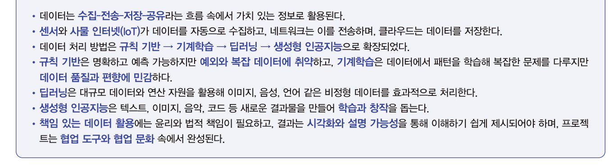
   <figcaption><b>교과서 25쪽</b> 주요 개념 정리하기</figcaption></figure>
   <div class="grid g4">
    <div class="card"><h4>데이터의 흐름</h4><p>수집 → 전송 → 저장 → 공유</p></div>
    <div class="card"><h4>처리 방법의 발전</h4><p>규칙 기반 → 기계학습 → 딥러닝 → 생성형 AI</p></div>
    <div class="card"><h4>책임</h4><p>최소 수집 · 목적 제한 · 보호 조치 · 공정성 · 법적 책임</p></div>
    <div class="card"><h4>표현과 협업</h4><p>시각화 · XAI · 형상 관리 · 이슈 트래킹 · 공유 문서</p></div>
   </div>`,
  pages:[{p:25,t:"주요 개념 정리하기"}]},
 {n:"02",h:"Ⅰ단원 전체 개념 지도",
  lead:"교과서 44~45쪽. 오늘 배운 것(왼쪽 가지)과 다음 회차에 배울 것(오른쪽 가지)이 한 장에 있습니다.",
  html:`<figure class="fig">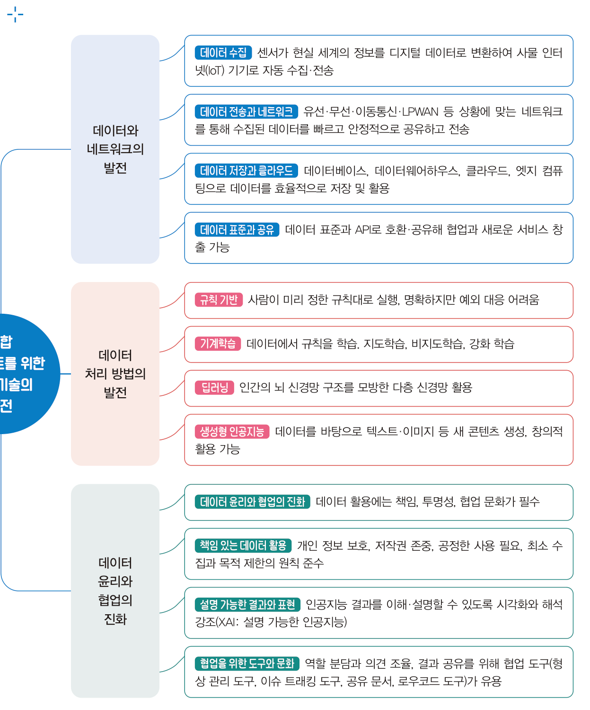
   <figcaption><b>교과서 44쪽</b> 『융합 프로젝트의 이해』 개념 정리하기 ① — <b>오늘 배운 부분</b></figcaption></figure>
   <figure class="fig">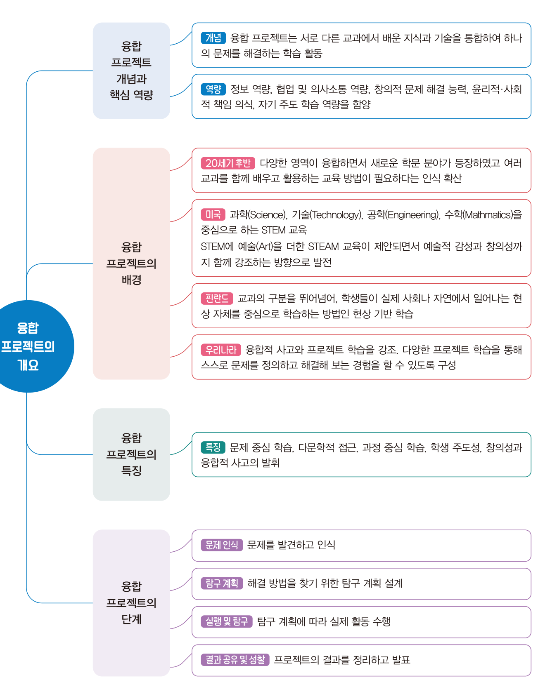
    <figcaption><b>교과서 45쪽</b> 개념 정리하기 ② — <b>3회차(9/14)에 배울 부분</b>입니다. 미리 훑어보세요.</figcaption></figure>`,
  pages:[{p:44,t:"『융합 프로젝트의 이해』 개념 정리하기 ①"},{p:45,t:"개념 정리하기 ②"}]},
 {n:"03",h:"배운 내용 점검하기 · 대단원 평가 문제",
  lead:"교과서 46~48쪽. 오늘 다 풀 필요는 없습니다. <b>다음 수업까지 4주</b>가 비므로 그 사이에 스스로 점검하는 용도로 쓰세요.",
  html:`<div class="tw"><table style="min-width:520px">
   <thead><tr><th style="width:110px">교과서</th><th style="width:120px">무엇인가</th><th>언제 풀까</th></tr></thead>
   <tbody>
    <tr><td><b>46쪽</b></td><td>배운 내용 점검하기<br>지식 · 이해 1~15</td><td><b>오늘 1~4번, 8~12번</b>은 지금 풀 수 있습니다 (오늘 배운 범위)</td></tr>
    <tr><td><b>47쪽</b></td><td>과정 · 기능 / 가치 · 태도<br>+ 성취도 자기 점검</td><td>과정·기능 문항은 <b>오늘 활동지와 같은 문제</b>입니다</td></tr>
    <tr><td><b>48쪽</b></td><td>대단원 평가 문제 01~08</td><td><b>1~6번</b>이 오늘 범위 · 7~8번은 3회차 뒤에</td></tr>
   </tbody></table></div>
   <figure class="fig">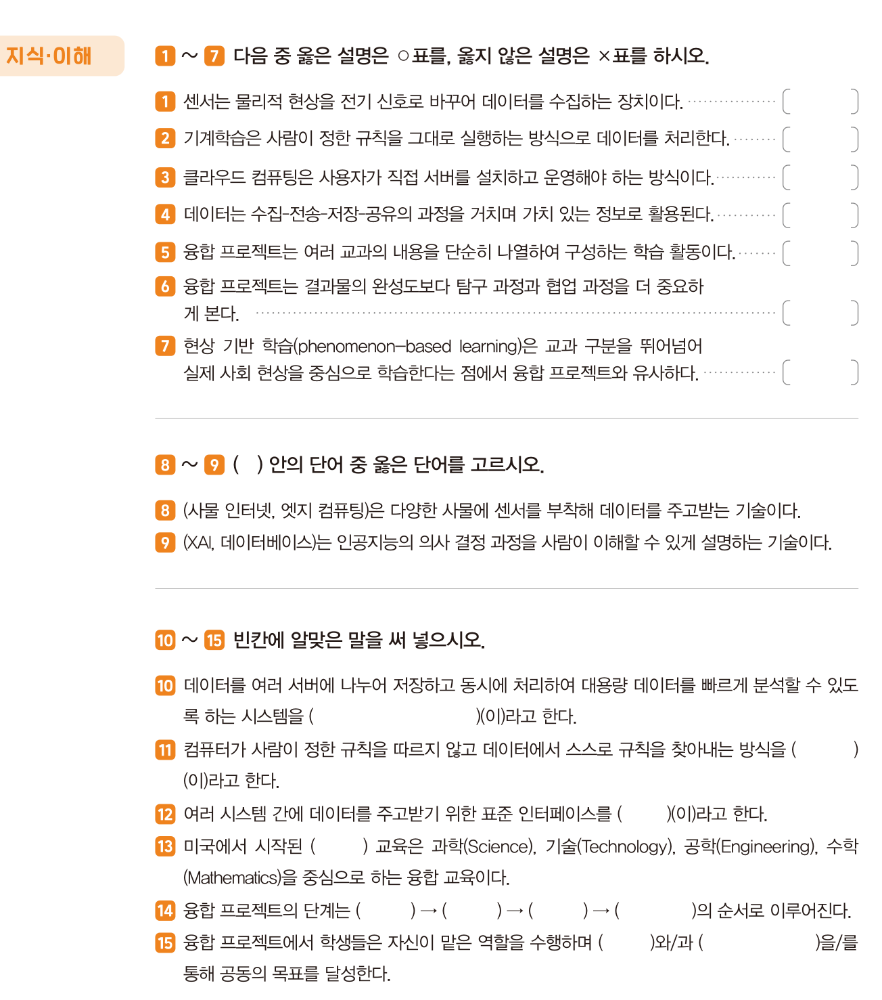
    <figcaption><b>교과서 46쪽</b> 배운 내용 점검하기 — 정답 및 해설 186쪽</figcaption></figure>
   <figure class="fig">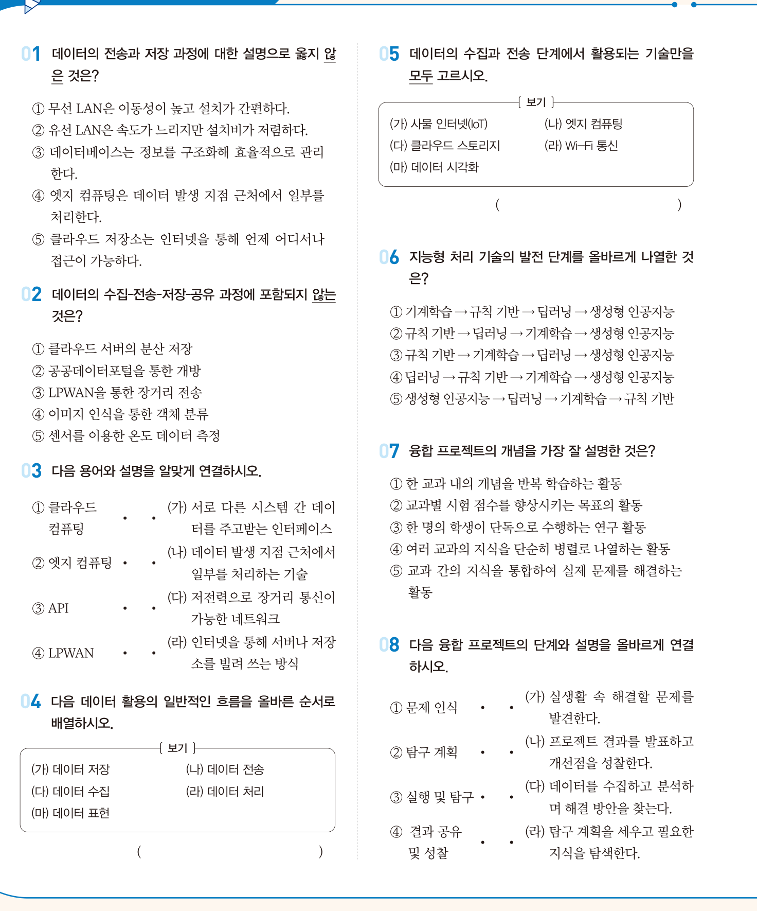
    <figcaption><b>교과서 48쪽</b> 대단원 평가 문제 — <b>01 · 02 · 03 · 04 · 05 · 06번</b>이 오늘 범위입니다</figcaption></figure>
   <figure class="fig">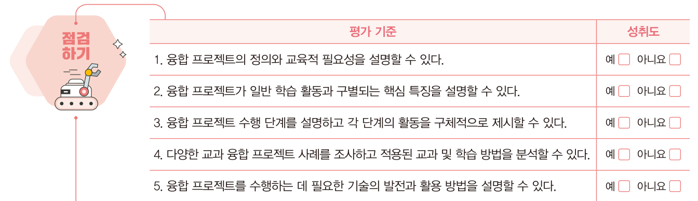
    <figcaption><b>교과서 47쪽</b> 점검하기 — 다섯 항목 중 <b>5번</b>이 오늘 수업의 성취 기준입니다</figcaption></figure>
   <div class="box tip"><b>4주 공백을 견디는 법</b> · 9월 14일까지 4주가 빕니다.
   교과서 46쪽 1~4번, 8~12번과 48쪽 01~06번을 <b>일주일에 한 번씩 다시 풀어</b> 보세요. 3회차부터는 오늘 용어를 전제로 진행합니다.</div>`,
  pages:[{p:46,t:"배운 내용 점검하기 · 지식 · 이해"},{p:47,t:"과정 · 기능 / 가치 · 태도 / 점검하기"},{p:48,t:"대단원 평가 문제"}]},
 {n:"04",h:"융합 직업의 세계 — 생각을 코드로, 실패를 성장으로",
  lead:"교과서 50쪽. 오늘 배운 기술로 먹고사는 사람의 이야기입니다.",
  html:`<figure class="fig">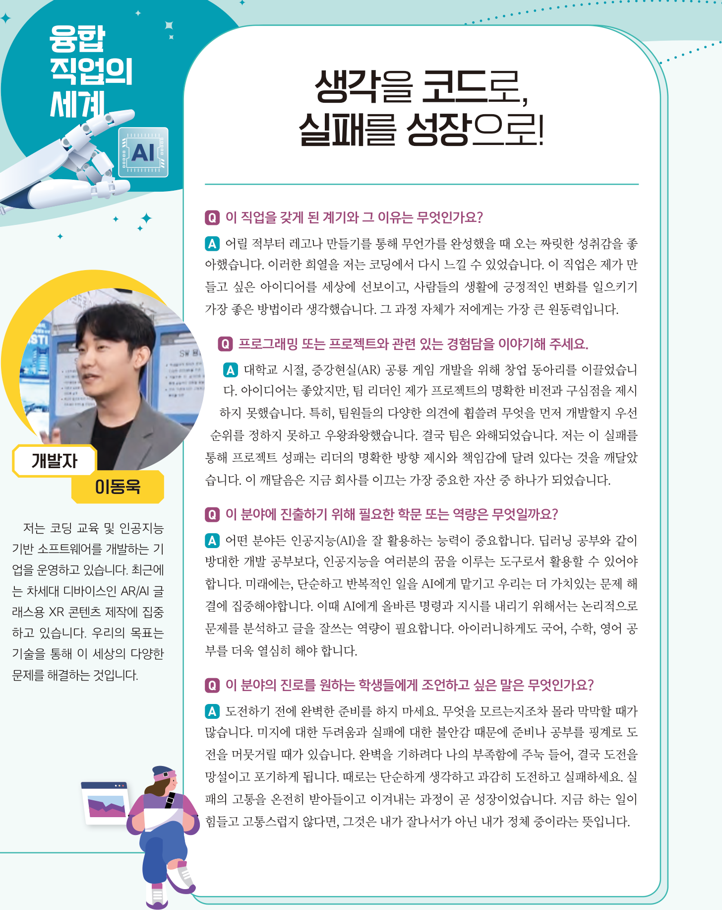
   <figcaption><b>교과서 50쪽</b> 융합 직업의 세계 — 개발자 이동욱</figcaption></figure>
   <div class="box"><b>인터뷰에서 눈여겨볼 세 문장</b>
    <ul>
     <li>&ldquo;팀 리더인 제가 프로젝트의 명확한 비전과 구심점을 제시하지 못했습니다. 결국 팀은 와해되었습니다.&rdquo;
      <br><span style="color:var(--dim)">— 7회차부터 팀 프로젝트를 합니다. 이 실패담을 기억해 두세요.</span></li>
     <li>&ldquo;딥러닝 공부와 같이 방대한 개발 공부보다, 인공지능을 <b>여러분의 꿈을 이루는 도구</b>로서 활용할 수 있어야 합니다.&rdquo;</li>
     <li>&ldquo;AI에게 올바른 명령과 지시를 내리기 위해서는 논리적으로 문제를 분석하고 <b>글을 잘 쓰는 역량</b>이 필요합니다. 아이러니하게도 국어, 수학, 영어 공부를 더욱 열심히 해야 합니다.&rdquo;</li>
    </ul></div>
   <div class="ask"><div class="ah">발문</div>
   &ldquo;도전하기 전에 완벽한 준비를 하지 마세요&rdquo;라는 조언이 나옵니다.
   3회차에 <b>나만의 프로젝트 주제</b>를 정할 때, 이 말을 어떻게 적용할 수 있을까요?</div>`,
  pages:[{p:50,t:"융합 직업의 세계 — 개발자 이동욱"}]},
 {n:"05",h:"오늘 남긴 것과 다음 시간",
  html:`<div class="tw"><table style="min-width:520px">
   <thead><tr><th style="width:130px">산출물</th><th>내용</th><th style="width:150px">이후 쓰임</th></tr></thead>
   <tbody>
    <tr><td><b>활동지</b></td><td>서비스 하나의 수집–전송–저장–처리–표현 분석 + 정리하기 3문항</td><td>영역 1 평가 8점 · 3회차 주제 선정의 출발점</td></tr>
    <tr><td><b>토의 기록</b></td><td>논제 결론, 체험 소감, 배운 점, 고칠 부분</td><td>수행평가 관찰 기록 · 세특 근거</td></tr>
    <tr><td><b>확인 문제</b></td><td>강의 블록별 4문항씩 총 12문항 + 정리 4문항</td><td>대단원 평가 대비</td></tr>
   </tbody></table></div>
   <div class="box"><b>다음 시간 — 3회차 (9/14 월) · 융합 프로젝트의 개요</b> (9~12차시) · 교과서 28~43쪽
   <ul>
    <li>융합 프로젝트란 무엇이고 왜 필요한가 — 도시 열섬 사례, 세계의 융합 교육</li>
    <li>융합 프로젝트의 특징 다섯 가지와 네 단계</li>
    <li>안전거리 사례를 네 단계로 끝까지 — 반응 시간을 직접 재고 파이썬 프로그램까지</li>
    <li><b>나만의 융합 프로젝트 주제 정하기</b> — 11월 성과공유회까지 이어지는 주제를 확정합니다</li>
   </ul>
   <b>미리 해 올 것</b> · 오늘 활동지 10번 칸을 떠올리며, 관심 있는 <b>생활 속 문제 세 가지</b>를 메모해 오세요.</div>
   <div class="mini"><span><a href="lesson03.html" style="color:var(--accent)">3회차 수업 페이지 미리 보기 →</a></span>
   <span><a href="index.html" style="color:var(--accent)">운영실 메인 →</a></span></div>`}],
 quiz:[
 {q:"데이터 처리 방법의 발전 순서로 옳은 것은?",
  opts:["기계학습 → 규칙 기반 → 딥러닝 → 생성형 인공지능","규칙 기반 → 기계학습 → 딥러닝 → 생성형 인공지능","딥러닝 → 기계학습 → 규칙 기반 → 생성형 인공지능","규칙 기반 → 딥러닝 → 기계학습 → 생성형 인공지능"],
  a:1,why:"교과서 25쪽 · 44쪽. <b>규칙 기반 → 기계학습 → 딥러닝 → 생성형 인공지능</b>. 48쪽 대단원 평가 06번과 같은 문제입니다."},
 {q:"다음 설명에 해당하는 것은?<br><span style='color:var(--mut)'>여러 부서와 시스템에서 수집한 데이터를 한곳에 모아, 경영 의사 결정에 활용할 수 있도록 분석 중심으로 설계된 대형 저장소</span>",
  opts:["데이터베이스","데이터웨어하우스","엣지 컴퓨팅","분산 처리 시스템"],
  a:1,why:"데이터웨어하우스입니다. 교과서 16쪽. 48쪽 대단원 평가 01·03번과 연결됩니다."},
 {q:"융합 프로젝트에서 데이터의 <b>출처를 명확히 표기하고 라이선스 조건을 확인</b>해야 하는 가장 큰 이유는?",
  opts:["데이터 용량을 줄이기 위해","저작권을 침해하지 않기 위해","전송 속도를 높이기 위해","모델 정확도를 높이기 위해"],
  a:1,why:"저작권이 있는 데이터는 권리자의 권리를 존중해야 하며 무단 사용 시 법적 문제가 발생합니다. 교과서 22~23쪽."},
 {q:"오늘 수업 전체에 비추어, 프로젝트에서 기술을 선택할 때 가장 바람직한 태도는?",
  opts:["항상 가장 최신 기술을 고른다","가장 정확도가 높은 기술만 고른다","문제의 성격에 맞는 기술을 고르고 그 근거를 설명할 수 있어야 한다","다른 모둠이 쓰는 기술을 따라 고른다"],
  a:2,why:"뒤에 나온 기술이 항상 더 좋은 것은 아닙니다. 학습 목표 3번이 &lsquo;사용한 기술과 방법을 <b>선택한 근거를 설명</b>할 수 있다&rsquo;입니다. 교과서 12쪽 · 47쪽 점검하기 5번."}],}
]};
</script>
<script src="config.js?v=5"></script>
<script src="app.js?v=5"></script>
<script>
boot();

/* ---------------- 센서 카운터 ---------------- */
(function(){
  const ITEMS=["휴대폰 알람을 껐다","지문·얼굴로 잠금을 풀었다","버스·지하철 카드를 찍었다",
   "자동문을 지났다","엘리베이터 버튼을 눌렀다","편의점에서 카드로 결제했다",
   "이어폰을 블루투스로 연결했다","걸음 수가 기록되는 앱을 쓴다","교실 조명·냉난방이 자동으로 켜졌다",
   "CCTV가 있는 곳을 지났다","지금 이 수업에 카메라를 켰다","내비게이션·지도 앱을 켰다"];
  const g=document.getElementById("scGrid");
  g.innerHTML=ITEMS.map((t,i)=>`<label><input type="checkbox" data-sc="${i}"><span>${t}</span></label>`).join("");
  const n=document.getElementById("scN"), msg=document.getElementById("scMsg");
  function upd(){
    const c=g.querySelectorAll("input:checked").length;
    n.textContent=c;
    msg.textContent = c===0 ? "해당하는 것을 모두 눌러 보세요."
      : c<=3 ? "생각보다 적나요? 아직 세지 않은 것이 많습니다."
      : c<=6 ? "오늘 하루 " + c + "번, 여러분은 데이터가 되었습니다."
      : c<=9 ? c + "번입니다. 이 데이터는 지금 어디에 있을까요? 누가 볼 수 있을까요?"
      : "무려 " + c + "번. 오늘 수업은 이 데이터들이 어디로 흘러가는지를 따라가는 시간입니다.";
  }
  g.addEventListener("change",upd); upd();
})();

/* ---------------- 네트워크 상황 퀴즈 ---------------- */
(function(){
  const Q=[
   {s:"<b>상황 1.</b> 학교 서버실에 있는 컴퓨터 20대를 연결합니다. 옮길 일이 없고 속도가 가장 중요합니다.",
    o:["유선 LAN","무선 LAN(Wi-Fi)","이동 통신망","LPWAN"],a:0,
    w:"<b>유선 LAN(이더넷)</b>입니다. 전송 속도가 빠르고 안정적이며, 설치와 이동에 제약이 있지만 서버실은 옮길 일이 없습니다."},
   {s:"<b>상황 2.</b> 배달 라이더의 오토바이 위치를 <b>달리는 중에도</b> 실시간으로 보내야 합니다.",
    o:["유선 LAN","무선 LAN(Wi-Fi)","이동 통신망(4G·5G)","LPWAN"],a:2,
    w:"<b>이동 통신망</b>입니다. 넓은 범위에서 이동하며 연결할 수 있습니다. Wi-Fi는 거리와 장애물의 제약이 있어 달리는 오토바이에는 맞지 않습니다."},
   {s:"<b>상황 3.</b> 논밭 곳곳에 토양 수분 센서 50개를 묻습니다. 전기를 계속 공급하기 어렵고, 5분에 한 번 숫자 몇 개만 보내면 됩니다.",
    o:["유선 LAN","무선 LAN(Wi-Fi)","이동 통신망(4G·5G)","LPWAN"],a:3,
    w:"<b>LPWAN</b>입니다. 저전력으로 장거리 통신이 가능해 배터리로 오래 버텨야 하는 IoT 기기에 적합합니다. 전송 속도가 느린 것은 문제되지 않습니다."},
   {s:"<b>상황 4.</b> 교실에서 학생들이 노트북과 태블릿으로 자료를 검색합니다. 자리를 옮겨 다니고 기기 수가 많습니다.",
    o:["유선 LAN","무선 LAN(Wi-Fi)","이동 통신망(4G·5G)","LPWAN"],a:1,
    w:"<b>무선 LAN(Wi-Fi)</b>입니다. 가정과 사무실, 교실처럼 한정된 공간에서 여러 기기가 이동하며 쓰기에 적합하고 요금 부담도 없습니다."}];
  document.getElementById("netq").innerHTML=Q.map((q,i)=>
   `<div class="nq" data-nq="${i}"><div class="s">${q.s}</div>
     <div class="opts2">${q.o.map((t,j)=>`<button onclick="nqPick(${i},${j})">${t}</button>`).join("")}</div>
     <div class="fb">${q.w}</div></div>`).join("");
  window.__NQ=Q;
})();
function nqPick(i,j){
  const Q=window.__NQ, root=document.querySelector(`.nq[data-nq="${i}"]`);
  if(root.dataset.done)return; root.dataset.done="1";
  root.querySelectorAll(".opts2 button").forEach((b,k)=>{
    if(k===Q[i].a)b.classList.add("ok"); else if(k===j)b.classList.add("no");
  });
  root.querySelector(".fb").classList.add("on");
}

/* ---------------- 편향 시뮬레이터 ---------------- */
(function(){
  const r=document.getElementById("bRange");
  /* 표본이 적을수록 정확도가 크게 떨어지도록 — 데이터가 적으면 못 배운다 */
  function acc(nSamples){ return 50 + 47*(1-Math.exp(-nSamples/25)); }
  function upd(){
    const a=+r.value, b=100-a;
    document.getElementById("bA").textContent=a;
    document.getElementById("bB").textContent=b;
    const accA=acc(a), accB=acc(b), tot=(accA+accB)/2;
    const set=(fl,vv,v)=>{document.getElementById(fl).style.width=v+"%";document.getElementById(vv).textContent=v.toFixed(0)+"%";};
    set("flA","vA",accA); set("flB","vB",accB); set("flT","vT",tot);
    const gap=Math.abs(accA-accB);
    const weak = accA<accB ? "A" : "B";
    const m=document.getElementById("bMsg");
    if(gap<6) m.innerHTML=`두 유형의 정확도 차이가 <b>${gap.toFixed(0)}%p</b>입니다. 데이터를 고르게 모았을 때 나오는 결과입니다. 전체 정확도는 <b>${tot.toFixed(0)}%</b>.`;
    else if(gap<25) m.innerHTML=`전체 정확도는 <b>${tot.toFixed(0)}%</b>로 나쁘지 않아 보입니다. 그런데 <b>${weak} 유형</b> 학생은 <b>${Math.min(accA,accB).toFixed(0)}%</b>밖에 되지 않습니다. 차이 <b>${gap.toFixed(0)}%p</b>.`;
    else m.innerHTML=`전체 정확도 <b>${tot.toFixed(0)}%</b>. 하지만 <b>${weak} 유형</b> 학생에게는 <b>${Math.min(accA,accB).toFixed(0)}%</b> — 사실상 <b>쓸 수 없는 시스템</b>입니다. 그 학생들은 매일 아침 문 앞에서 멈춰 서게 됩니다. 이것이 <b>데이터 편향</b>입니다.`;
  }
  r.addEventListener("input",upd); upd();
})();
</script>
</body></html>
